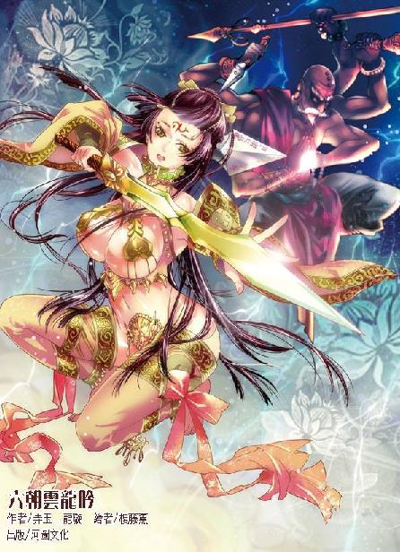

第39集·在商言商
临安篇（8/10）
出版日期：2012-11-08
【本集内容简介】
秦桧为自保而服毒受创，生死不卜；两个兽蛮人被已死老僧牵制，无法驰援；郭槐虽是武功高强，却显局促。程宗扬使出底牌之一：召唤蔺采泉——靠！这老贼只是嘴上说得好听，居然脚底抹油先逃了！
危急之时，一名蒙面人横空而出，夺了屠龙刀，接着又来了个程宗扬与剑玉姬皆未料想到的神秘人士，一剑腰斩西门庆，来无影、去无踪！
虽然在小瀛洲打生打死，回头还是笑呵呵地做生意。程宗扬迫切需要“时间”，他用水泥代理权与黑魔海换来五年不入宋国的保证……这桩生意划算吗？
※ ※ ※ ※ ※

封面人物：剑玉姬、已死老僧
保宁寺位于湖上，周围遍植着香樟、银杏、紫楠、松柏、枫香之类高大的乔木，风入林中，枝叶飒飒有声。虽然已是初夏时节，但寺中树影参差，远离尘世的喧嚣。置身于苍松翠柏之间，凉意乍起，却是难得的避暑胜地。
放生池的岩石上生满苔藓，藤蔓纤细的根须沿着假山石隙蜿蜒爬行。青翠的枝叶舒展开来，在墙头留下一片片浓绿的阴凉。放生池内，几尾鲤鱼在水中自如地游弋着，吞吐出细小的气泡，宛如世外仙境，幽静而又安谧。
程宗扬立在池边，却感到一股刺骨的寒意。
剑玉姬沿池而行，优美的身影宛如幽兰，但近在咫尺的池面上却看不到她的影子！
这个意外的发现使程宗扬仿佛掉进冰窖，浑身血液似乎都被冻僵。眼前有形，水中无影——难道世上真的有鬼不成？面前的女子究竟是一个活生生的人，还是一个没有实体的妖鬼？
程宗扬像见鬼一样瞪大眼睛，连大气都不敢出，忽然脑中灵光一闪，将一缕真气送往额角——生死根对死亡的气息敏感无比，如果眼前只是一个没有生机的鬼魂，生死根必然会生出感应，甚至像当日虞氏姐妹驭使的尸鬼傀儡一样，能够被自己操控！
剑玉姬缓步而行，仙子般的身影依然优雅，只看她的背影，任谁也想不到如此美妙的身影中，却埋藏着无穷妖异。
忽然剑玉姬停下脚步，怀抱的瑶琴发出一声清响。
※ ※ ※ ※ ※
大殿另一侧，西门庆带着春风般的笑容，若无其事地把玩着那柄白骨小伞，肩头和胸口被扇骨刺出的伤口不见丝毫鲜血，脸色又青又暗，表情却是好整以暇，似乎落入陷阱不是他，而是眼前的对手。
秦桧负手站在他身前丈许的位置，把西门庆和巫嬷嬷远远隔开。两名兽蛮武士一左一右地站在西门庆身后，金兀术那件牛皮制成的肩甲被枯木妖兽撕碎，肩头被枯枝刺穿的部位血肉模糊。青面兽鼻梁折断，脸上不断滴下血，淌在尖锐的獠牙上，更显得面目凶恶狰狞。
双方虎视眈眈，但各自投鼠忌器，一时间谁都没有动手。
这时一声长笑从殿后响起，笑声未落，场中所有人同时动了起来。最先动手的并不是秦桧，而是青面兽，他的长枪最擅远攻，程宗扬笑声甫起，他手中的长枪便发出一声撕碎空气的低啸，直挑西门庆咽喉。
西门庆连续催发血祭，已经是强弩之末，何况旁边还有一个稳压他一头的秦桧？天魔伞一展即收，撞歪青面兽的枪尖，身体顺势横移，掠向墙侧，并发出示警的尖啸。
巫嬷嬷胖大的身体如乌云般压来，寒光凛冽的铡刀直劈秦桧后颈。秦桧像被刀风吹起般一横，接着右手拇指递出，接在巫嬷嬷的铡刀上，这一指看似平淡却用上十成功力，巫嬷嬷面上的刀疤像着火一样变得血红，腾地退开一步。
放生池畔，剑玉姬以无尽优雅的姿势旋过身，淡淡道：“你终于看出来了吗？”
程宗扬背后惊出一层冷汗，脸上却努力保持镇定，干笑着打了个哈哈，笑道：“在下肉眼凡胎，看不出仙姬的变化。”
旁边老仆装束的郭槐低咳一声，“好幻术。”说着抬袖一拂。
眼前曼妙的身体如烟雾般散开，接着在程宗扬完全意想不到的角度凭空伸出一只玉手，然后是一条光洁的玉臂。
那是一名他从未见过的女子！程宗扬一眼看去，心头便跳出四个词：明眸皓齿，冰肌玉骨，姿容旷世，艳色倾城！
那女子凭空而立，云髻高耸，一张姣丽的玉脸混合着端庄与妩媚，杏眼深若渊潭，闪动着智慧的光芒。她身材高挑，肌肤明艳的光泽犹如神祇，然而身上的衣物却让程宗扬像看到火一样一阵灼痛。
她的颈中戴着一条由金环串成的项链，雪白的肌肤和金灿灿的项链散发出耀目的光辉。链身沿着丰滑的乳沟垂下，在胸前变成两片金黄的心形链甲，在乳晕处收紧，由上而下将一双丰挺的雪乳掩住一半。金色的链甲下方，另一半雪腻的乳肉暴露在外，显示出完美的圆形，随着她的呼吸轻轻颤动，圆润而充满弹性。
从乳尖直到腹下，女子如明玉般的胴体一丝不挂，肌肤犹如精致的象牙，毫无瑕疵，腰臀曲线玲珑，让人一看就禁不住绮念丛生。在腹下双腿之间的位置，像武者的腰带扣般扣着一颗金光闪耀的兽头。令人诧异的是，金属扣没有任何系带，直接附在她光洁的玉股间。
她的双腿修长婀娜，明艳的肌肤白滑如玉，从侧面看去，纤美的玉趾直到修长的美腿，再到饱满的雪臀、纤软的腰肢、柔美的玉颈……所有肌肤从头到脚一览无余，没有一丝一毫的遮掩。
她腹下的金属扣让程宗扬想起了Ｃ字裤，没想到六朝竟然有这么时尚的女性。能穿Ｃ字裤的女性除了有能露的勇气，还有要能露的本钱。像自己那个时代富有弹性的塑料制品也就算了，这女子却是轻易将一只沉重的金属扣戴在赤裸的下体上，完全可以想象她胴体的轮廓：前阴挺、后臀翘，有着让男人疯狂的绝美形态。
她一手握着一柄秋水般的长剑，洁白的美足悬在半空，玉趾微垂。秀美的玉足有着让人惊叹的美态，如仙女般悬在程宗扬侧方丈许的空中。难怪自己在池中看不到她的倒影，当初见过一面更是连她的具体容貌都想不起来，原来自己看到的一直都是虚幻的影子。
剑玉姬用幻术凝成的身影已经绝美，真身竟然比程宗扬能想象的更美。相比幻身的娇美婉约，她的真身堪称艳光四射，顾盼间光彩照人，让人一看过去便再也挪不开视线。尤其是她丰隆的雪臀，足以令任何一个男人欲仙欲死。
可惜在场的只有程宗扬一个男人，另外一个是……大内的公公！
面对火辣的躯体，郭槐如树皮般的老脸没有丝毫表情，枯瘦的手掌从袖中伸出，犹如鸟喙向前一啄。
剑玉姬身形幻化，周围的空气隐隐波动，凝出一件烟雾般的纱衣，接着变成不透明的白色，将惊鸿一瞥的香艳躯体遮蔽起来，然后随风飘起。
程宗扬笑声刚起就被截断，让秦桧升起不祥的预感，他一招逼开巫嬷嬷，顾不得追杀西门庆，立即飞身掠上殿宇。
脚尖踏上庙宇的飞檐，秦桧便看到一名抱着瑶琴的白衣女子如柔云般从殿后冉冉升起。她腰间衣带轻举，飘逸的身形犹如从天而降的仙子，柔美的体形有说不尽的婉约曼妙，却是方才在殿中现身的剑玉姬。
错愕间，秦桧蓦然听到家主的大喝：“小心！”
剑玉姬嫣然一笑，飘逸的身影与他擦肩而过，举止从容，波澜不惊，似乎没有半分威胁。秦桧却蓦然感受到一丝细微的杀机如针一般直刺过来，他甩袖打出一支狼毫笔，射向剑玉姬的心口，随即冲天而起。
眼看那支狼毫笔毫无阻碍地从剑玉姬身上穿过，秦桧才意识到自己犯了大错——枉他出身黑魔海一系，竟然还被她高明的幻术所惑。
黑魔海巫宗一向以种种匪夷所思的巫术见长，宗门秘术可以分为四大流派：化妖、幻术、驭鬼、惑神。其中幻术包括匿形、潜影等法门，可以操纵光影匿踪潜形。而幻术的颠峰莫过于制造幻身，令人如在眼前。
先机已失，剑玉姬随时都可能使出杀招，而自己甚至连她真身的位置都未曾察觉。高手相争，生死只在一线。生死关头，秦桧用出压箱底的法宝，“砰”地捏碎一只玉盒。
一层青黑的雾气从秦桧袖中散出，从枝叶间透入的阳光与毒雾一触，立刻变成惨毒的绿色光芒。毒雾进入皮肤，使肌肉瞬间失去弹性，秦桧长而有力的手指迅速变得灰黑，失去肌肤的光泽。
一股劲风从秦桧完全没有意料的角度逼来，力道之强远远超乎他的想象。此时毒素已经进入血脉，秦桧的四肢变得僵硬如铁，剑玉姬长剑刺在他的背心，发出金石般的脆响。
受力之下，秦桧的身形加速跌落，“砰”的一声，庙宇上瓦片纷飞，他像铁块一样砸穿殿顶，撞在佛像的莲花台上。巨大的冲击力将莲花台撞塌半边，秦桧也被滚落的瓦砾埋住，生死不知。
大殿上“叮”的一声脆响，一柄刀尖像切木片一样切开砖瓦，刀锋凛冽的寒气使殿顶尺许范围都凝霜冻结，接着握刀的手臂一撑，程宗扬翻身跃上大殿，随即朝剑玉姬扑去。
剑玉姬穿着白衣的美艳身影倏忽退出，足尖踏着檐角的一只脊兽，犹如凌虚乘风。
离剑玉姬还有丈许，程宗扬陡然停步，接着左足一旋，身体如陀螺般滴溜溜转了一圈，数十片碎瓦如箭矢般飞出，射向四面八方。击中剑玉姬的瓦片径直从她身影间穿过，另一片击在空处的碎瓦却猛然爆裂。
程宗扬毫不迟疑地往空处一刀劈出。虚空中传来一声轻笑，一柄长剑轻轻挑出，点在屠龙刀侧。程宗扬的掌心仿佛被铁锤猛敲一记，屠龙刀几乎脱手飞出，丹田气轮疾转，稳住身形，接着五虎断门刀全力施展。
剑玉姬目露讶色，轻轻“咦”了一声，似乎对程宗扬修为的突飞猛进大感诧异。
武二郎的五虎断门刀本就招法凶悍，此时以无坚不摧的屠龙刀施展出来更是如虎添翼，平添了数倍威力，连剑玉姬也不得不暂避其锋。
西门庆在金兀术与青面兽的合击下狼狈不堪，若非三人身上都有伤，增加了招术中的疏漏，他这会儿早已伤在两名兽蛮武士手下。
西门庆尖啸声越来越凄厉，只差没有喊出“仙姬救命”！
失去秦桧的拦截，巫嬷嬷并没有立即施援，而是返身闯进主殿，抡起铡刀，朝埋在瓦砾下的秦桧暴斩三记，就是铁人也斩成四截，这才腾身出来，嘶声道：“大官人莫慌！老身在此！”
巫嬷嬷斜身飞起，迎面却撞到一道灰扑扑的身影。
老仆打扮的郭槐低咳一声，右手递出，四指并拢、拇指横张、指尖弯曲，竟是江湖中少见的龙爪手。
巫嬷嬷虽然不知这个奴仆般的糟老头身份，但他一爪挥出，巫嬷嬷立刻识出厉害，脚下一蹬，踏碎数块青砖，稳住身形，接着举刀封住郭槐的手爪。
“咄”的一声，郭槐并拢的四指硬生生穿透刀身，像拧一条衣带般，将精钢打造的铡刀拧得如同麻花。
剑玉姬娇叱道：“走！”
凶悍如巫嬷嬷闻言也不再硬拼，她甩下锄刀，转身掉头狂奔。郭槐身形微闪，挡在巫嬷嬷身前。巫嬷嬷嚎叫着双拳齐出，狂风暴雨般攻向郭槐，随即转身再走，这次却是闯进大殿，从殿后破墙而出。郭槐如影随形，不多时又将巫嬷嬷迫得回转。
西门庆使出小巧腾挪的功夫，在狭小的空间内飞速闪避。金兀术肩膀受伤，手中的重棰施展不易，索性挎在腰后，如猛兽般靠着强壮的爪牙与西门庆厮杀。
西门庆迭逢险招，不多时，身上的锦衣便被金兀术的兽爪撕破半边，一条手臂几乎被扯下，他牵动伤势，“哇”地吐了口血。眼看两名兽蛮武士的攻势织成天罗地网，以他的身法也无处逃遁，西门庆猛然脚下一沉，像钉子踏进地面，半步不退，接着扯开衣袍，露出苍白的胸膛，狂叫道：“谁敢杀我！”
西门庆皮肤撕开，胸前蓦然伸出一只狼爪扣住青面兽如牛头大的手肘，在他手臂上留下三道寸许深的血槽。
在青面兽的惨号声中，金兀术侧肩将他撞开，一手抡起重棰，像拍一只苍蝇般朝西门庆头顶拍去。
巫嬷嬷被郭槐截住，自顾不暇。金兀术加入盘江程氏之前就是兽蛮营的首领，五级巅峰的修为不逊于南荒时的武二郎，一棰击下，将西门庆胸前的狼爪砸得骨碎筋断，血肉模糊。
西门庆口鼻都迸出鲜血，他绝技已然施尽，这会儿在金兀术的重棰下左支右绌，危在旦夕。
“如是我闻！一誓之出，八方如见，天地皆应。”剑玉姬清越的声音犹如琴曲，言词却锋锐如刀，“已死老僧，你可是要破誓吗？”
“哈哈哈哈！”墙外传来一声豪迈的长笑，接着“砰”的一声，临湖的土墙被人踹出一个大洞。已死和尚大步进来，一手摩着光头，一手提着裤子，气宇轩昂地说道：“仙姬说哪里话！老衲只是一时内急，出去方便，不信你问善儿！”
静善冷着脸，像不认识他一样两眼望天。
已经滚蛋的已死老僧突然折了回来，让程宗扬心下又气又恨，这群老家伙果然没有一个好东西！已死老僧装出放水的样子，其实是以退为进，存着隔岸观火的心思，在墙外听得不亦乐乎，这会儿被剑玉姬揭破，跳出来要摘桃子。剑玉姬和郭太监倒是抱了同一门心思，以上驷对下驷，柿子专拣软的捏，先剪除对手的羽翼。
剑玉姬一招打得秦桧生死不明，郭槐对巫嬷嬷也是稳拿，再有两三招就能取那泼妇性命。要说郭槐的策略也无可厚非，只要自己能拖住剑玉姬一盏茶时间，巫嬷嬷必死无疑。巫嬷嬷一死，西门庆就成了瓮中之鳖——可要拖住剑玉姬岂是容易的？如果不是剑玉姬无意伤自己性命，再加上屠龙刀的威力连她也一时难撼其锋，自己死得恐怕比巫嬷嬷还快。妈的，死太监不会早就看出来这一点，才放手让自己和剑玉姬玩命吧？
剑玉姬冷笑道：“公子修为虽然精进，刀法却非君所长，这五虎断门刀有其形而无其神。”
程宗扬脸上微微一红，他并不是一个在武学上十分下功夫的人，真正苦练也就是在晴州时被孟老大强迫上课那几日。为了这次和剑玉姬玩命，他特别借来屠龙刀，准备一扫战场破烂王的恶名。但屠龙刀虽强却只有一把，本来玩双刀的不得已变成单刀，怎么玩怎么别扭，结果一眼被剑玉姬看穿底细。那感觉就像借了西装、皮鞋去见丈母娘，结果被人揭穿一点都不合身，根本就是打肿脸充胖子一样尴尬。
程宗扬恼羞成怒，大喝一声：“贱人！接我一刀试试！”
剑玉姬长剑斜挑，正面挡住屠龙刀的怒斩，剑身却微微一侧，避过屠龙刀的锋芒。程宗扬心头大定，他还以为剑玉姬是刀枪不入的神人，原来她还忌惮屠龙刀的锋锐。程宗扬不再犹豫，屠龙刀大开大阖，全是进手，刀光霍霍朝剑玉姬杀去。
相比屠龙刀的虎虎生风，剑玉姬的剑法犹如不食人间烟火的仙子，轻扬婉举，有种难以言说的玄妙意境。程宗扬的五虎断门刀虽然凶猛凌厉，却沾不到她半点衣角。
刀锋忽然一振，一缕真气如游丝般钻入手臂，程宗扬真气狂涌，将她的攻势统统化解。就在这时，丹田中的气轮忽然一滞，接着一股沛然的威压从对手身上散发出来，剑玉姬整个人都仿佛变成一柄利剑，压得程宗扬几乎透不过气来。
已死老僧和程宗扬交手时活像一只随时会挂的病鸭子，这会儿对上金兀术，病鸭子眨眼变成海东青。他大笑着飞身过去，在半空中双臂一展，犹如苍鹰展翅，一臂扫中金兀术的重棰，一手抓住西门庆朝后抛出，喝道：“接住！”
静善连理都不理，闪身掠进战团，任由西门庆头下脚上地一头栽在地上，当场摔得闭过气去。
已死老僧赶紧回头看了一眼，然后放心地双手合什，慈眉善目地说道：“阿弥陀佛，善哉善哉。”
青面兽的手肘鲜血直流，但他这会儿凶性大发，对伤势全然不顾，膀颈鬃毛飞舞，长枪洒下无数寒星，如雨点般朝老和尚的光头袭去。已死老僧大喝一声，朝着枪锋一拳冲出，似乎要用强悍的修为正面硬撼青面兽的长枪，右腿却阴险地一屈，以膝盖朝青面兽小腿撞去。这一膝如果撞实，就算青面兽真是头野兽，也少不得废掉一条腿。
“我的佛啊——”
已死老僧抱着脚一声惨叫，却是招术还未使出就被静善徒儿踩住脚背，还狠狠拧了一下。
青面兽躲过断腿之祸，却不肯承情，淌着鼻血傲然说道：“吾乃兽族无敌勇者！青面兽！正当壮年！尚未婚配！”
金兀术踹着他的膝弯把他踢翻，毛茸茸的兽爪挡住已死老僧的一记直拳。
已死老僧与金兀术、青面兽两人打得鸡飞狗跳，他的招术甚是奇特，身体像面条一样柔软，每每从不可思议的角度攻出一指一掌，偏偏又威力极大。金兀术和青面兽都有五级的实力，本身又天赋异禀、力大无穷，对上老和尚的指掌竟然没有占到便宜。如果不是静善几次在危险关头搅局，恐怕两人早就在伤在老和尚手下。
又一次被静善绊住，已死老僧必中的一掌差了毫厘，让青面兽堪堪躲开，老和尚赌气道：“不打了！不打了！”说着真的拍拍屁股转身就走。
场中剩下金兀术、青面兽和静善三人，双方虽然敌对，却全无斗志。静善面沉如水，金兀术和青面兽这两头大牲口挺胸凸肚，在她面前呼喝作势，像跳战舞一样举臂勾拳，展露肌肉，极力表现出自己的雄性气势。
静善看得又好气又好笑，过了会儿道：“这里不是你们的战场，回去吧。”
青面兽挺胸道：“吾乃兽族无敌勇者！青面兽！正当壮年！尚未……”
金兀术一脚把他踹翻，拄着巨棰道：“吾！金兀术！汝乃何族？”
静善冷哼一声，转身给了他一个后脑勺。
两名兽蛮人与老和尚的交手有惊无险，程宗扬这边却遇上了大麻烦。剑玉姬剑气怒涨，真气犹如巨浪一波波袭来，程宗扬虽然有屠龙刀在手，仍然被全面压制。
虽然程宗扬明知道这是剑玉姬顾忌屠龙刀的锋锐，以拙胜巧，但如果这时略有退让，剑玉姬的真气势如破竹，直接会要了他的小命。不得已之下，程宗扬只能咬牙苦撑，结果弃长就短，演变成比拼内力的消耗战。
丹田的气轮在巨大的压力下，以近乎疯狂的速度旋转，那些汇集成轮状的细小莹光飞快地黯淡下来，真气迅速流逝。虽然调息打坐之后，气轮还能重新变得充盈，但这一次，程宗扬不知道他有没有足够的运气支撑到最后。
不到半盏茶时间，突然丹田一阵剧痛，程宗扬骇然发现，气轮已耗尽最后一点真元，几近油尽灯枯。
虽然早有预料，但真元消耗的速度仍然超乎他的想象。透过内视，能看到气海越来越稀薄，旋转的气轮颜色由莹白变成淡淡的红色，仿佛风中摇曳的残烛，随时都可能熄灭。
程宗扬咬紧牙关苦苦支撑。再坚持一下，只要再坚持一下，就能支撑过去……
气轮的色泽逐渐黯淡，像熄灭的烛光一样变得暗红，就在它几乎寂灭的刹那，气轮猛地膨胀起来。
如果这一幕出现在平常的修炼中，程宗扬肯定以为是突破在即，气轮剧涨，修为突飞猛进。然而在此时出现，只有一个可能：真元耗尽，殒灭在即。这不是气轮蜕变，而是爆裂的前兆。
程宗扬的额头、鼻尖同时渗出一层细密的汗珠，如果气轮爆裂，他有超过九成的可能会当场完蛋。如果他走了狗屎运，撞上剩下不足一成的可能，大概会变成废人。除此之外，再没有第三个可能。
程宗扬这会儿只有一个念头：为什么没人死！不管死的是谁，只要有人送命，生死根就能捕捉到死气，让我再多支撑片刻……
程宗扬手中的屠龙刀似乎重逾千斤，而透过刀身攻来的真气仿佛无穷无尽，没有片刻停歇。
唇上忽然一湿，鼻中滴下一串温热的鲜血。程宗扬死命咬住牙关，不顾一切地催动气轮，脑中却在飞快地转动。也许是生死关头，思路分外清晰，在气轮爆裂的刹那，程宗扬心头微动，做出一个惊人的举动。
他猛地散去所有真气，任由剑玉姬攻来的真气长驱直入，攻入丹田。已经脆弱不堪的气轮像吹爆的气球一样轻易迸碎。程宗扬的口鼻同时涌出鲜血，在近乎散功的剧痛中，他只做了一件事——将丹田混乱的气流导入生死根！
生死根吸收的死气从来都是单向汇入丹田，此时借助剑玉姬的攻势，程宗扬悍然让真气逆行，由丹田涌至生死根。伴随着刀割般的痛楚，迸碎的气轮与生死根一触，蓦然凹陷。程宗扬面目扭曲，以非人的毅力承受着体内的剧变。
一片混乱中，丹田内仿佛多了一个针尖大小的物质，即使以内视也无法感知它的形状和细节，但它的存在毋庸置疑。因为气轮破碎后，在气海中流动的细小光点都被那个物质所吸引，不分大小、形态，一视同仁地被吸入其中。
那个物质吸引的速度越来越快，继而散布在经络百穴间的真元、剑玉姬攻来的真气，甚至体外弥漫在天地间那些难以辨认的气息，都被一一吸入其中。
程宗扬清楚看到剑玉姬惊愕的神情。能让这个算无遗策的贱人失态，他真是足以开怀了。可惜程宗扬想笑，却没能笑出来。他感觉到体内的气血也正在被那个物质吞噬，假如剑玉姬现在罢手，她甚至用不着动一根手指，就能看到他爆成一团血雾的可笑下场。
突然一股沛然的寒意沿着双臂猛然涌入丹田，它是如此强大，潮水般的气势远远超过他的修为，同时又奇寒彻骨，沿途的经络仿佛瞬间都被冻僵。程宗扬奔流的鼻血一刹那被冻住，以一个古怪的模样挂在脸上，而手中的屠龙刀像被唤醒般微微颤动，接着脑中传来一声在苍茫中轮回了无穷岁月的长啸！
是龙吟！程宗扬脑中只有这一个念头。
※ ※ ※ ※ ※
那个仿佛能吞噬一切的物质终于吸收至极限，下一个瞬间，一只气轮在枯竭的丹田突然出现。它比原来的气轮黯淡了许多，蕴藏的真元却多出数倍。更让程宗扬意外的则是它远远超乎想象的零乱和芜杂，仿佛整个气海都回归到天地初始的浑沌状态，奔涌的气息不住汇聚，最后重新凝出真气。
与此同时，手中的屠龙刀仿佛变得轻了许多——不是份量减少，而是一种纯粹出自本能的感受。勉强打个比方，可以想象一块装满各种类型的Ａ片，内涵深邃而厚重的硬盘，突然被格式化之后的苍白。不过刀身一无异状，刀锋锐利依旧，仍然有着无坚不摧的犀利。
“那是什么？”剑玉姬的声音中有一丝少有的凝重。
“想知道吗？”程宗扬退开一步，趁机调息几下，然后厉声道：“跪下问我的鸟吧！”
剑玉姬如水的目光凝视着他，接着毫不犹豫地举剑刺落。
程宗扬刚在生死间走了一遭，这会儿信心十足地挥起屠龙刀，然后心里大喝一声：干！
刚一运气，程宗扬顿时哀嚎起来。他好不容易凝炼的真气，较之以往混乱了十倍有余。气轮中细小的光点除了那些他早已熟悉的气息，周围还多了一大堆根本无法理解的东西。虽然真元的充沛多出数倍，但彼此牵制之下，能运用的真气比原来还少，若不是屠龙刀锋锐如常，这一剑就要让他当场出丑。
剑玉姬冷笑一声，剑势一改当初的淡雅，陡然变得凌厉。
此消彼长之下，程宗扬应付得越发吃力，即使仗着屠龙刀的神威，也越来越难以抵挡。刚才丹田的变化只是弹指一瞬间，程宗扬暗自掂量，用不了几下，他这匹下驷就会被上驷干掉。
更让程宗扬提心吊胆的则是寺外。算算时间，易彪等人早该闻讯赶来，但至今毫无动静，用脚后跟都能猜出剑玉姬这贱人肯定另有后招，除了寺内，还藏有伏兵！他的直属营虽然比不上星月湖老兵，但锤炼到现在，比起一般的江湖好手已经堪称百炼精钢，如果出现折损，哪怕只有一个也够他肉痛的。
眼看自己这匹下驷等不到郭槐回援就要马失前蹄，程宗扬不再迟疑，拿出一块黑白分明的玉佩奋力摔下，喝道：“蔺老贼！还不滚出来！”
剑玉姬闻声攻势略微一缓，接着如飞鸟般向后掠去，拉开数丈距离。
程宗扬一脸狞笑，那块玉佩“砰”的一声摔在地上，毫不意外地碎成八瓣。可等了足有一分钟，周围却没有半点动静！
程宗扬当场傻了眼。为了除掉西门庆，他除了邀来郭槐，还暗中联系太乙真宗的新任掌教蔺采泉，联手对付黑魔海这个双方的共同大敌。蔺老贼当时拍胸脯答应得无比爽快，谁知事到临头却放了自己鸽子。
程宗扬在心里狠狠把蔺老贼的祖宗八代都问候了一遍。这老东西说的比唱的都好听，什么见物如见人；君子一诺，千金不易；剿除邪道，虽匹夫匹妇，亦有责焉；公子首倡大义，我太乙真宗愿附骥尾；公子掷佩为号，蔺某应声而至……一番慷慨激昂，原来都是放屁啊！
忽然巫嬷嬷一声惨呼，被郭槐的龙爪手拧住手臂，凌厉的真气势如破竹地一路逆行，将她的经脉尽数震碎。巫嬷嬷的双腿仿佛无法支撑身体重量，跪倒在地，口中鲜血狂喷。剑玉姬却不动声色，似乎对得力臂助的生死漠不关心。
郭槐的双手拢在袖中，佝偻着腰身过来。程宗扬暗暗松了口气，有老太监在身边，至少他不会死那么快。
檐角的剑玉姬风姿如画。程宗扬不知道剑玉姬在郭槐眼中是什么模样，但在自己眼里，剑玉姬绝美的身形似乎每时每刻都有细微的变化，时而多了条轻纱，时而多了一双丝履，甚至连她的位置都飘乎不定。
剑玉姬的幻术被郭槐喝破，程宗扬曾短暂地见到她的真身——但那个火辣的身影转瞬即逝，再次出现时，剑玉姬身上多了一件轻柔的白色丝衣，让程宗扬不禁怀疑自己方才所见的，究竟是剑玉姬的真身，还是她又一个幻影？
看到剑玉姬从容淡定，一副情况尽在掌握中的鸟样，让程宗扬禁不住十二分火大。
“哈哈哈！一块玉佩就把仙子吓得找不到北，哈哈！真是笑死我了！”
剑玉姬对他的嘲讽恍若未闻，忽然间飞身而起，剑前人后，姿势说不尽的婉妙动人，去向却是寺庙内的一堵矮墙。
“无量天尊！”
矮墙后，一抹剑光如骄阳般绽放开来，刹那间将剑玉姬的身影笼罩在剑光下。
剑玉姬斜过身一剑递出，两柄长剑剑尖相抵，剑身弯成弧形，接着一弹，彼此分开。
剑玉姬退回檐上，另一道身影则轻飘飘地向后翻出，无声无息地落在矮墙上。他穿着淡青色道袍，剑眉朗目，神完气足，却是一个从未见过的陌生道人。
程宗扬看着这个不知道是不是自己召唤出来的高手，愣了半晌才道：“你是谁？”
这道人程宗扬瞧着不熟，剑玉姬却不陌生，冷冷道：“原来是太乙真宗的米道友。”
米远志还未答话，程宗扬就抢先打了个哈哈，抱拳道：“原来是米道长！早听蔺掌教说起过！久仰久仰久仰啊！”
米远志稽首道：“可是程公子？宗门传来急讯，掌教真人不得已返回龙池，特命贫道赶赴小瀛洲，一来向公子道歉，二来是为诛除黑魔海的妖邪。贫道登岛之后却未见公子，方才正与人交手，忽然感应到掌教玉佩才姗姗来迟，还请公子恕罪。”
原来蔺老贼脚底抹油，一声不响就溜了，不过好歹还派了个人来，多少留了几分情面。
程宗扬顾不上扯什么恕罪，急忙问道：“你刚才和人交手？是谁？”
米远志道：“当是一些匪寇，为首的是一名黑衣女子。贵属结阵迎敌，尽可以支撑。”
果然是那个没有现身的齐姐！程宗扬心头的一块大石落地，齐姐已经露面，黑魔海在宋国的底牌多半也出尽了。如果露面的不是齐姐，而是剑玉姬打出的一张新牌，他就该头大如斗了。
“米道友，”剑玉姬淡淡道：“你师兄王珪死在江州，你却要为杀兄仇人效力吗？”
米远志平静地说道：“王师兄弃教出门，与我太乙真宗再无瓜葛。米某奉掌教之令剪除黑魔海妖邪，虽死无恨。”
“你师门一系在太乙真宗数代郁郁不得志，难得你们这一代出了几个成材弟子，却是一个比一个愚直。”剑玉姬叹道：“辗转思之，若非如此愚直，也未必会有你们师兄弟的成就。”
米远志表情略有变化，显然被剑玉姬这句话说中心事，他沉默片刻，拔剑道：“道不同，不相为谋。请。”
西门庆被老和尚救下，青面兽和金兀术掂掂自己的份量，估计是抢不过来，有心和小豹女搭讪，人家又不理不睬，两头大牲口只好臊眉搭眼地回来。
青面兽拄着长枪，若有所思地望着静善，那点心思心全写在脸上。金兀术倒还有点脑筋，一头扎进倒塌半边的大殿，过了会儿才钻出来，沉痛地说道：“死矣。”
青面兽回过头，一脸同情地说道：“官人节哀。”
程宗扬黑着脸道：“秦桧是死是活关我屁事！况且他还没死呢！”
金兀术瓮声瓮气地说道：“没气矣！体甚硬，脸甚黑。死透哉，死透哉。”
程宗扬听得直翻白眼，“闭嘴！我说没死就是没死！”
金兀术一脸理解地拍了拍他的肩膀，叹了口气，没再说什么。
程宗扬差点噎死。秦桧要是这么容易被干掉，生死根怎么可能全无反应？死奸臣肯定是有什么保命的绝招，但这两个大牲口一副他新死了小妾的模样，让他恨不得一人给他们来一刀。
顾不得教训这两头牲口，程宗扬迅速用内视检查了一下气海。丹田内的气轮原本光点毕聚，灿若星河，此时却稀疏了许多。仔细审视下，并不是光点少了，而是有一半的光点转化为无法看到的东西，它们与仍然可见的光点相生相伴，一对对如角力般旋转着，形成新的平衡，难怪他感觉气海比以往更加充盈，能够施展的真气却少了许多。
光点以及与它相伴的东西凝成气轮，此外还有大量浑沌的气流，阴阳不分、虚实难辨，但用内视仔细检查，不时能看到其中闪动的五彩华光。好在除此之外，气轮并没有其他异状，仍和以往一样能运转、催动，聚敛真气。
程宗扬无法理解这些变化，索性不再理会，但丹田的异变自己到现在还吃不透，一时不敢再出手，不过能出手的人也不是没有。
程宗扬回头望去，只见巫嬷嬷粗胖的身体在地上缩成一团，口鼻鲜血直涌，虽然还有一口余气，但已无反抗之力。
程宗扬对郭槐皱眉道：“为什么不杀了她？”
郭槐躬着腰道：“物尽其用。”
程宗扬明白过来，“你想拿她钓剑玉姬那条大鱼？剑玉姬要是不管呢？”
“再杀不迟。”
程宗扬好奇地问道：“你有把握赢过剑玉姬？”
郭槐没有回答，眼中却流露出难以名状的信心。
剑玉姬优雅地一抬手——是否真的抬手，程宗扬用眼睛也分辨不出——淡淡道：“已死大师，请。”
老和尚一扫刚开始时那副老掉牙的糊涂相，他两眼凶光闪动，手掌摩着光头，匪气外露地狞声道：“太乙真宗！好好好！”
说着他双掌一推，隔着丈许的距离，米远志立足的土墙像被一双巨掌拍上般轰然倒塌。
米远志一声长啸，如流星般从墙上一跃而下。他右手执剑，左手捏着剑诀，剑锋未至，剑气已经犹如江河奔涌而出。
已死老僧双手握拳，“砰”的一声击在地上。铺地的青砖如波浪般涌起，米远志双足仿佛陷入泥潭，速度陡然降下来。他踏住一块青砖，身体猛然间拔起丈许，接着双手握住剑柄举过头顶，笔直地朝已死老僧脖颈刺去。
已死老僧半蹲着身体，双拳没入地面，眼看长剑要透颈而入，他肩后的僧袍忽然破碎，伸出两条淡金色的手臂，一手握着铜铃，“叮”地挡住长剑，另一只手则握着一柄六寸长的金刚杵，朝道人手掌钉去。
米远志左掌一翻，按住老僧淡金色的手掌，借势退开，面色变得凝重之极。
“叵密！”已死老僧低吼一声，肩后接连又伸出两对手臂，连同他本来的双臂，一共八条手臂，每只手掌都握着一件法器，如神如魔。
米远志浑身一震，“八臂魔僧！”
程宗扬倒抽一口凉气，“这家伙是妖怪吧？他是什么来历？”
郭槐低咳一声，“已死僧又称八臂魔僧，虽然是佛门弟子，但声名狼藉，因为接连犯下十余桩奸杀大案，逃入龙宸。有传闻说他是叵密门下，十方丛林多次派人追杀，均无功而返。”
“真是人不可貌相啊！就他的身子骨，还犯奸杀案？”程宗扬道：“他们和太乙真宗有什么过节？”
“十方丛林与太乙真宗分执佛、道两家牛耳，互以正道自居，互通声气。当日剿灭叵密外道，太乙真宗也曾派出数位长老。”郭槐道：“皇城司数日前收到消息，说有巨寇潜入临安，想来就是这位八臂魔僧。”
“他不是一直在寺里修行吗？”
“所谓坐禅多半只是掩人耳目。”
程宗扬明白过来，又问道：“姓米的那位呢？”
郭槐垂着眼睛道：“米远志是太乙真宗旁支，与王珪、秦仲越系出同门，论辈分是蔺掌教的师侄辈。”
程宗扬对王珪记忆犹新，他是禁军重将，修为直逼谢艺，在江州之战被孟老大、侯二哥联手击杀。如果米远志拥有相近的实力，倒是得力的臂助。
程宗扬笑眯眯道：“大貂珰身在深宫，对江湖掌故倒是了如指掌啊。”
郭槐面无表情地说道：“皇城司是朝廷鹰犬、陛下耳目，岂敢闭目塞听？”
程宗扬迅速衡量了一下双方实力。己方虽有六人，但秦桧生死未卜，金兀术和青面兽各自负伤，能够一战的，除了自己就剩下两名邀来的帮手：郭槐和米远志。
黑魔海一方与自己这边的情形居然差不多，巫嬷嬷和西门庆一蹶不振，剑玉姬以外，还剩下已死老僧和静善。论实力，自己一方还占了上风。
程宗扬心头涌起强烈的杀机，机会难得，剑玉姬算无遗策，除了布下翻江会和齐姐的局，还请出八臂魔僧师徒，本人更是亲自出马，对这场鸿门宴下了偌大的赌注。
如果仅凭自己手上的实力，这会儿早已一败涂地，但她无论如何也算不到自己会请来大内和太乙真宗的帮手。眼下己方占了六成胜算，如果错过这次机会，往后再想引剑玉姬出面可就难了。
程宗扬向郭槐暗暗递了个眼色，一边叫道：“老和尚！你不是想要袈裟吗？拿去！”
已死老僧状如疯魔，八条手臂如车轮般挥舞翻飞，将米远志逼得步步后退。闻声他神情微动，被米远志抓住这一线机会，长剑如闪电般递出，刺向已死老僧的心口。已死僧的四条手臂同时一收，抓住米远志的长剑。
就在这时，一股冰寒的气息袭来，程宗扬犹如一头猛虎，屠龙刀狂劈而下。
“叮”的一声，已死老僧手中的金刚杵应声而断，淡金色的手臂绽开一道尺许长的伤口，接着又被刀锋的寒气凝冻，肌肉像冰雕一样扭曲着。
“大日如来！”已死老僧背后一只金色的手掌蓦然胀大，带着炙热的气息一掌拍下，击在屠龙刀刀背上。
砖石飞扬间，程宗扬的屠龙刀像切豆腐一样劈进地面。已死老僧四条手臂握住米远志的长剑，一臂受伤、一臂按住屠龙刀，剩余两条手臂一拧，转到身前。
已死老僧犹如金刚怒目，厉喝道：“金刚萨埵！”一只捻着佛珠的手掌在空中张开，抓向程宗扬的面门。
程宗扬的屠龙刀被拍进地面，一时无法拔出，眼看已死老僧一掌抓来，他手肘往地上一撑，像跳街舞一样横飞起来，双脚连环踢在老僧的掌心。米远志也一声清啸，长剑刺向已死老僧的右眼。
程宗扬出刀的同时，剑玉姬也没闲着，迎敌的却是金兀术和青面兽。两人一使重棰、一使长枪，全力迎向剑玉姬。大貂珰郭槐则身形一闪，并指朝委顿在地的西门庆眉心点去。
西门庆刚刚醒转，见状狼狈地打了个滚，一边叫道：“救命——”
静善冷冷瞥了他一眼，终于还是如雪豹般跃起，攻向郭槐的侧面。老太监无论眼、手、身、意都锁在西门庆身上，出手一往无前，看似要将这狗贼一举毙于指下，静善身形刚动，他凌厉的攻势却像是大堤决口，转而朝静善席卷而去。
静善终究比不上老太监阴险，如果说与巫嬷嬷交手，郭槐还留着几分实力，这一招则是他蓄意施为，专引静善主动来攻。静善只觉劲风割面，完全是本能地侧身跃开，试图避过老太监的攻势。
西门庆双目寒意大盛，忽然一掌拍在静善的背心，把她掷向郭槐，接着手中的天魔伞化成十余枚白骨短剑，射向另外一端的米远志！
米远志道袍下真气涌动，剑光如电，凌厉无匹，显示出至少六级的修为，然而面对已死老僧这个八臂魔头，却没占到半点便宜。
“嗡！”
已死老僧口诵真言，八条手臂空着的手掌捏出指诀，其余手中的法器齐鸣，将米远志的剑势生生压制住。
“班！”
十余枚白骨短剑从已死老僧臂间穿过，闻声速度陡然提升一倍，发出尖锐的啸声。
“匝！”
已死老僧那条受伤的手臂迎向屠龙刀，毫不意外地迎刃断落。
“萨！”
已死老僧断臂五指箕张，一掌拍在程宗扬胸口。
程宗扬收刀护身，攻势为之一缓。
“哞！”
最后一声佛咒诵出，已死老僧剩余的七条手臂同时击向米道人。
米远志身形一缩，长剑织出一片银白光幕，犹如一只蚕茧护住身体要害。疾射的白骨短剑虽然声势惊人，却没有一枚穿透光幕，被剑网尽数格飞。
“天上地下！”
暴喝声中，已死老僧一臂劈进剑网，随即被剑气割出无数交错的伤口。但米远志严密的剑网也因为这条手臂而被撕开一角，紧接着两条淡金色的手臂从剑网缺口探入，一只手掌抓住米远志的面门，另一只则握着一柄圆环状的法器，从他喉头一掠而下，直切入腹。
鲜血横飞间，已死老僧诸臂齐张，犹如狂魔，怒喝道：“我佛独尊！”
程宗扬将那条断臂绞得粉碎，纵身往米远志扑去。米远志由胸至腹绽开一道巨大的伤口，却没有当场毙命。他盘膝趺坐，双手按住胸腹的伤口，掌心射出一握朦胧的黄光，已经用上太乙真宗秘传的行气存神之术，稳住伤势。
已死老僧顾不上取米远志性命，如鹰隼般朝郭槐掠去，声色俱厉地喝道：“老阉狗！放下老僧徒儿！”
静善被西门庆一掌推出，身不由己地撞向郭槐，她胸前的念珠猛然分开，呈扇形朝郭槐击去。
郭槐双目低垂，衣袖微微一晃，将十八枚金星紫檀念珠尽数收入袖中，接着一掌抹在静善肋下。静善像断线的风筝一样飞出，左侧的肋骨尽数折断。
已死老僧双臂捞起庭中一只石香炉朝郭槐砸去，另外五条手臂各自捏出法印，暴喝道：“怒！”
郭槐瘦小的身形像被狂风卷起一样飘出丈许，忽然他袖口一荡，飞出一条黑黝黝的细鞭。斜阳仿佛黯淡下来，天地间只剩下一条暗黑的鞭影。
八臂魔僧手中的石香炉轰然破碎，石屑如雨点般飞开。他两条淡金色的手臂被鞭影缠住，骨骼一瞬间扭曲、折断，寸寸碎裂。
鞭影凭空消失般的收回袖中。郭槐落在地上，他佝偻着腰背，布帽下露出萧索的白发，木讷的神情就像一件不起眼的家具。
程宗扬这时才惊觉这位大貂珰的真实修为远远超过估计，凌驾在米远志之上的八臂魔僧竟然一招败北，输得干净利落。
已死老僧冷冷盯着郭槐的衣袖，忽然仰天长笑，“哈哈哈哈！”
笑声未落，已死老僧腾身而起，一手抓住静善，“大官人！你敢害我徒儿！此仇必有报之！”
西门庆阴声道：“伤你徒儿者，老阉狗是也！关我西门何事！”
“呸！”已死老僧毫不客气地啐了回来，“老阉狗已经是废物！老衲何苦找他麻烦？仙姬小心！老僧去也！”
已死老僧挟着徒儿越墙而出，接着两道庞大的身影同时飞起，如巨石般重重跌在地上。
剑玉姬曼妙的身影凌空走来，一双莹白玉足悬在尺许高的空中，足心白嫩，足尖不染纤尘。虽然知道这只是她的幻身，仍不禁让人惊叹她绝美的风姿。
剑玉姬淡淡笑着，玉齿间轻轻吐出三个字：“荡星鞭。”
郭槐身形愈发佝偻，低低咳嗽几声，没有说话。
“武穆王从敝宗夺走的荡星鞭，果然在郭大貂珰身上。”剑玉姬如释重负地说道：“教尊得知，必定欣喜非常。”
郭槐不言不笑，荡星鞭如蛇般从袖中探出尺许，在身前微微浮动。
“岳贼把这荡星鞭交给你，想来是让你保护刘娥。”剑玉姬轻笑道：“他倒舍得。可惜此鞭虽然神妙异常，用之不当，却难免噬主之忧。大貂珰咳嗽不止，想必是妄用此鞭，伤了肺经。”
郭槐冷哼一声，荡星鞭先扬后抑，刹那间仿佛将空间撕开一角，鞭影下仿佛露出一片闪烁着星光的夜空。
剑玉姬美妙的身影像风一样流逝，接着现出她艳光照人的真身。
荡星鞭笔直挥出，与剑锋交击的刹那，鞭身波浪般弯曲起来。庭院中的青砖早已被已死老僧双拳震飞，这时鞭风掠过，厚重的青砖像风化一样变成碎粉。接着一道细细的鞭痕透入剑身，像小蛇一样在剑内游动着，朝剑玉姬的纤指掠去。
剑玉姬唇角的笑意凝住，玉指一紧，将鞭影从剑中逼出。仅一瞬间的变招，她已经失了先机，被滚滚涌来的鞭影罩住。
郭槐慢吞吞道：“当日武穆王用此鞭绞杀西门夫人，收了她的一魂一魄置于鞭中，还请仙姬当心。”
忽然一声清啸，如潮的鞭影蓦然退散，剑玉姬犹如一只艳光四射的孔雀从鞭影中飞出，长剑微微一旋，从郭槐肋下刺入。
郭槐身形一闪，整个人从衣间滑出，失去支撑的衣物仍保持着原来的形状，接着被剑光绞碎。
“好一招金蝉脱壳。”剑玉姬道：“大貂珰再接奴家一剑。”
郭槐神情微变，厉声道：“你哪里学来的剑法！”
剑玉姬妙目生辉，“大貂珰好眼力，正是华妙宗的玄元仙剑！”说着剑上泛起一层绚丽而又神秘的光华。
“去死吧！”程宗扬一声狂吼，屠龙刀划过数丈空间，眨眼间劈到剑玉姬身前。那抹绚丽的剑光在屠龙刀的寒光下凝住，接着散为无数流星。
剑玉姬连发丝也没有动一下，程宗扬却连人带刀整个弹飞，被郭槐在背后一托，才稳住身形。
剑玉姬道：“果然是太一经，难怪泉奴会上你的当。”
郭槐往前踏了一步，荡星鞭平平伸出，速度虽慢，撕开的空气却发出尖锐的啸声，犹如鬼哭。
剑玉姬手臂平举，劲气交击的刹那，她曼声道：“玄之又玄，众妙之门。”
剑气纵横交错，如蛛网般攻入荡星鞭最薄弱的一环。
暗黑色的鞭影一瞬间荡出无数圆环，将凌厉的剑气逐一化解，接着鞭梢猛地挑起，刺在剑玉姬肘下。
剑玉姬雪白的手臂溅出一朵血花，长剑锵然落地。就在这时，郭槐手臂一震，眼中露出难以置信的神色。
身后一柄长剑如鸿羽般飘落，变幻的剑势如诗如梦，轻飘飘穿过荡星鞭最后一个圆环，从郭槐右肩刺入，没有半点停顿地直没至柄。
郭槐佝偻的身子不堪重负般的单膝跪倒，干枯的白发溅上血迹，右肩上多了一只剑柄。剑锷是一串繁复的鸟篆，剑柄只有一手长短，形式古朴之极，质地非金非玉，只有一抹淡淡的莹光在柄上流淌。
握着剑柄的女子，赫然是他对面的剑玉姬！
※ ※ ※ ※ ※
场中一片寂静，所有人都望着郭槐颈侧的长剑和那个握剑的丽人，一时间都有种时空混乱的错觉。
郭槐身前、身后同时出现两个剑玉姬，他对面的剑玉姬跌坐在地，被荡星鞭刺穿的手肘鲜血淋漓，另一个与受伤的剑玉姬外表毫无分别，却多了一分空灵的气质。
郭槐咳嗽着，肩侧的伤口溅出血沫。随着他的咳声，对面的剑玉姬身形隐隐变化，那张原本艳光照人的面孔变得冷若寒霜，却是程宗扬曾在南荒见过的女子：齐姐。
立在郭槐身后的剑玉姬轻轻一拔长剑，鲜血如喷泉般从郭槐肩头涌出。
剑玉姬淡淡道：“大貂珰今日往生极乐，可喜可贺。”
米远志提到与易彪等人交手的是一名黑衣女子，程宗扬便先入为主，以为那是齐姐，完全忽略了小玲儿那个小贱人。剑玉姬和齐姐都是幻术匿形的高手，结果齐姐冒充剑玉姬，成功地骗过在场的每个人，最后由剑玉姬的真身给了郭大貂珰致命的一击。
难怪程宗扬与剑玉姬交手之际，觉得她没有想象中厉害，起初还以为她是想留自己性命，现在想来，恐怕在飞上大殿的一刻，这两个贱人就彼此换了位置。
等程宗扬意识到上了剑玉姬的恶当，局面已经无法收拾。米远志、郭槐先后重伤，只剩下自己一个光杆，对面却有剑玉姬和齐姐两个。纵然齐姐手肘受伤，无法执剑，还有实力难测的剑玉姬。
突如其来的变故使程宗扬的眼角几乎爆裂。眨眼间，邀来的两名帮手尽皆重伤，胜负立刻逆转。底牌已经出尽，对面的贱人似乎仍有层出不穷的手段，这场鸿门宴自己已经做足了准备，终究还是剑玉姬技高一筹，只怕自己偷鸡不成，连老本都要赔个干净。
与其坐而待毙，不如拼死一搏！程宗扬一言不发，合身朝剑玉姬扑去。
剑玉姬微微一笑，举剑点在屠龙刀的刀锷上，只轻轻一挑，程宗扬死命紧握的屠龙刀便脱手飞出。
这时双方距离只有尺许，程宗扬兵刃脱手，已经是没牙的老虎。剑玉姬抬起洁白的玉掌，往程宗扬胸前印去。
忽然程宗扬胸口光芒大作，电光石火间，一道强光穿透了剑玉姬的玉掌，却没有溅出丝毫血迹。
这并非是他刺中的又是一个幻身，而是剑玉姬掌心被电光击穿，溅出的鲜血还未流出就被直接蒸发。
程宗扬一手伸在怀中，胸前衣衫破碎，手掌伸出时，掌中多了一柄电光闪烁的长刀，正是他藏在怀里的雷射宝刀！
如果他先亮出雷射刀，以剑玉姬的剑术，最多是另一柄被击飞的屠龙刀，而且他的丹田刚生异变，运用不畅，实力更降一层。程宗扬行险一击，直接握着刀柄在怀里逼出刀身，终于伤了这个似乎永远不会被击败的女子。
被挑飞的屠龙刀还在空中翻飞，剑玉姬与程宗扬一触即分，退出数丈。她美目平静如水，没有流露出丝毫震惊、诧异的神情，她的手下却一片哗然。
西门庆捂着胸口笑道：“仙姬竟然受伤了，哈哈哈哈……”
齐姐不顾自己的伤势，急急掠到剑玉姬身侧，握住她的手腕厉声道：“怎么会这样！教尊说过，你一旦受伤——”
剑玉姬冷厉地瞥了她一眼，齐姐立即闭上嘴，胸部却不住起伏，眼中的惊怒怎么也抹不去。
剑玉姬忽然扬起头，只见一道身影从倒塌的大殿后跃上半空，一把抓住那柄屠龙刀，接着直劈下来。
程宗扬一喜，以为是死奸臣良心发现，从庙里诈尸，仔细一看，却是一个蒙面客。
那人握着屠龙刀从天而降，攻势未至已经卷起漫天刀风，声势惊人，可谓霸气十足。
齐姐挡在剑玉姬身前，左手握剑迎向屠龙刀。她与这柄屠龙刀周旋多时，深知屠龙刀的锋锐尽在锋刃，只要避开刀锋，就是用普通钢刀也可一战。
那人的刀法远比程宗扬精熟，刀锋一侧，将齐姐的长剑拦腰斩断，刺骨的寒气在她手臂上留下一道长长的血痕。
剑玉姬的神情带着一贯的从容，眼看爱将手臂不保，她左手玉指轻点，以毫厘之差避开刀锋，按在刀侧。屠龙刀虽然锋锐，此时被她真气一锁，仿佛被套在鞘中一般，难以挣脱。
蒙面客双手握刀往左右一摆，挣开剑玉姬的玉指，然后飞身而退，一把抓住程宗扬的衣领，“走！”
听到这个声音，程宗扬先大骂一声，叫道：“跑不了！杀了她！”
那人也不含糊，“蠢材！你不走！我走！”
程宗扬不退反进，细长的雷射刀呼啸而下。蒙面人一跺脚，反身朝剑玉姬杀去，一边喝道：“就一招！”
剑玉姬凤目生寒，左手握住剑柄，长剑划了一个玄妙的圆弧，点在雷射刀身正中。
程宗扬丹田异变，真气凝成的剑身脆弱不堪，勉强挡了半招，雷射刀险些脱手。但他也为蒙面人争取了半招时间，那名蒙面客一言不发，屠龙刀如狂风般朝剑玉姬卷去。
屠龙刀在他手中威力倍增，狂猛的气势仿佛要与剑玉姬拼死相搏。剑玉姬与齐姐同时出手，谁知那蒙面客脚下灵巧地一挑，像踢绣球一样挑起碎成两半的石香炉，分击两人，接着一把拖起程宗扬往墙头一丢，自己肩不动、手不摇，一边向后疾退，一边连番踢起碎石残砖。
他脚法的精湛实在是程宗扬生平仅见，那些砖石在他脚下如同活物一样，或直或斜，甚至还打着转、划着圈、拐着弯，如雨点般四下纷飞，然后又折了回来，劈头盖脸地朝剑玉姬和齐姐攻去。如果在足球场上，他的每一脚都堪称世界波。不过老家伙跑得更快，程宗扬一手攀着墙头，还没看过瘾，他就窜得无影无踪。
但他很有义气地留下一句话：“玄天剑在此！谁来杀我！”
齐姐娇叱一声，飞身欲追，却被剑玉姬拦住，“诈术。”
程宗扬倒是想走，可惜刚才只顾看蒙面人的脚法，错过了时机。蒙面人故意引她们去追，人家也不上当，这会儿想走也不容易。他硬起头皮笑道：“仙姬真身穿那么露，是不是在黑魔海待得久了，有了暴露的癖好？”
剑玉姬淡淡道：“我身如镜，公子所见不过是心中所想。”
“骗鬼啊！我还想你都露出来呢。”程宗扬道：“废话少说！有种砍死我！”
剑玉姬伸出手掌，掌心的伤势已经消失不见，“十余年来，能伤我者，唯公子而已。”
“上次是岳鸟人？”程宗扬讪笑道：“听说那家伙对与自己为敌的女人向来先奸后杀，不知上次仙姬伤在哪儿了？”
西门庆开口刚要说话，忽然露出惊惧的神情，接着双足一蹬，身体拼命拔起。
他腰腹的衣物猛然破开，一截雪亮的剑锋悄无声息地从腹上露出寸许，然后横着一切，带着扇面般泼溅而出的鲜血，从他肋下划出。
众人同时色变。黑魔海诸人是惊，全未想到程宗扬直到此时还藏有后手；程宗扬是又惊又喜，天知道哪里来的杀手，但至少不是黑魔海的人。
那柄长剑像来时一样突兀地消失，全无痕迹，身手竟然比方才的蒙面人还高出几分。
西门庆腰间的伤口几乎把身体斩成两半，他轰然一声扑倒在地，一边吐血，一边费力地说道：“救我！救我……”
齐姐先是震惊，接着露出一丝冷笑，“大官人放心，便是只剩下首级，教尊也能让你复生。”
西门庆露出怨毒的眼神，显然复生的滋味并不好受。
剑玉姬神情平静如常，如水的目光却流露出一丝憾意。她幽幽叹了口气，淡淡道：“却是妾身失算了，公子后招连绵不绝，下次交手，妾身定会打起十二分的小心。”
程宗扬冷笑道：“别急着走啊！时辰还早，大家再聊两个时辰，一边谈心，一边看着大官人咽气，这乐子，给我两个员外我都不换！”
西门庆在黑魔海中的地位非同一般，他的伤势几乎等同腰斩，多拖延片刻就多一分危险。程宗扬算定剑玉姬不敢拿西门庆的性命做赌注，才扯足了顺风旗。
果然，剑玉姬硬吃了他的讥笑，若无其事地收起长剑，然后退开一步，躬身福了一福，柔声道：“万望公子珍重。”
齐姐冷冷看了程宗扬一眼，挟起西门庆和巫嬷嬷，两人飞身而去。
这一仗如果自己运气不够好，都死七八次了，但程宗扬这会儿没有半点害怕，只有满心疑惑。
头一个蒙面人是谁，只看他堪比捞钱手段的精湛脚法，就能猜出七成。再加上他的目标有够直接，抢了屠龙刀就跑，自己要再猜不出那老东西的身份也不用混了。
但几乎腰斩西门庆的刺客是谁，程宗扬没有半点线索。那刺客一击即退，未曾露出丝毫身形，以至于连剑玉姬也摸不清底细，断然罢手。但程宗扬把在临安的交情想遍，也没想出究竟会是哪路神灵出手相救。
但有一点可以肯定，刺客还留在寺内，并且对自己没有恶意。
程宗扬先看了金兀术和青面兽的伤势。他们两个被匿踪的剑玉姬亲手所伤，伤势虽重却不致命。
伤势更严重的则是米远志，他的胸腹被八臂魔僧斩开，换作旁人早一命呜呼，但太乙真宗出来的高手对养生之道确实别有所长，米远志敛息凝神，伤势竟然没有恶化，只是无法移动。看来只要把他送回太乙真宗的道观，还能保住性命。
郭大貂珰已经是回天乏术，他的鼻息宛如游丝，勉强护住心脉一点温热，但生命已如风中残烛，随时可能熄灭。他垂着眼睛哑声道：“烦请公子……送老奴回宫……”
程宗扬安慰道：“大貂珰放心，我这里有医生，多调养几日就没事了。”
郭槐把一条细滑的鞭子放在他手中，低咳两声不再言语，身体如枯木般变得僵硬，却是屏蔽六识，潜心入定。
程宗扬挺起身，扬声道：“那位朋友，出来吧。”
话音刚落，一道剑光倏忽飞出，瞬间越过十余丈距离，一剑斩下米远志的头颅。
凤羽般的长剑带着漫天鲜血钉在地上，微微颤动。断颈中溅出的鲜血泼在零乱的砖石上，米远志无头的尸身僵坐片刻，然后扑倒在地。
程宗扬期盼已久的死气终于出现，却是在大局已定的时候。他几乎本能地按住额角，准备应对吸收死气时所带来的剧痛，然而这一次太阳穴上的伤疤毫无反应，反而是丹田的气轮突然一涨，将吸收来的浑沌气流纳入其中。
程宗扬一手按着太阳穴，带着古怪的表情看着现身的刺客。
一名丽人从花丛间摇曳生姿地走了出来。她的脚步又轻又软，每一步踏出，身体都灵巧地柔柔摆动，犹如风中摇摆的荷叶。她一直走到程宗扬面前才屈膝跪下，两只玉手在面前摊开，以一个虔诚的姿势把螓首贴在地上，柔声道：“奴婢叩见主子。”
看着温婉如画的卓云君，程宗扬终于明白过来，他呼了口气，“难怪你要杀他，够狠！”
虽然不清楚死丫头怎么会让她独自出来，但这会儿不是说话的时候。程宗扬只简短地吩咐道：“翠微园，天香水榭。”
那美妇俯身一拜，如轻烟般掠出寺院。
卓云君刚一离开，寺外便传来一阵脚步声，接着易彪推开大门大步进来。他的肩、臂、腿、背血迹斑斑，显然刚经过一场恶斗，腰背却依然挺得笔直。
易彪双脚一碰，向程宗扬敬个军礼，“报告！直属营一排遇袭！一共战死七人，负伤十六人。”
程宗扬一阵心痛，剑玉姬对他处处留手，对付他的手下却是不遗余力。直属营一个排一战就折损了四分之一，若不是剑玉姬主动退却，伤亡只怕更多。如果不是意外出现的两枚棋子打乱了她的布局，全军覆没也不是不可能。
“老匡和冯大法呢？”
“两位法师安然无恙。”
秤宗扬犹豫了一下，“师师呢？”
“师师姑娘断了几条肋骨，尚在昏迷。”说着易彪脸上微微一红，“那女子被劫走了。”
“游婵？”程宗扬心头一紧。
他与游婵萍水相逢，最多是逢场作戏、各取所需，算不上什么交情。但相比黑魔海其他女子，误以为他是飞鸟上忍的游婵无疑是最无辜的一个。现在他的身份暴露，游婵面临的处罚可想而知。
程宗扬思索了一下，道：“先回园子再说！”
直属营连同程宗扬在内，完好无伤的只有八人。匡仲玉和冯大法虽然没有受伤，但精力透支过甚，都已经筋疲力尽。
好在翠微园与小瀛洲只是一水之隔，众人分乘三条船，将死者和受伤的同伴尽数运回园中，岛上其他人的尸首则由雪隼团赶来处理。
听过易彪的叙述，程宗扬才知道出手截住直属营的确实是小玲儿。她逼出屠龙刀的寒气之后，潜形藏在地下，一现身就伤了少尉周逢。随同她一道来的还有二十余名黑衣黑裤、身材矮小的蒙面人。那些人来去无踪，招法诡异，直属营一接敌就吃了大亏。冯大法拼命用手雷炸出一片空场，众人才稳住阵脚。
幸好当初为了给俞子元疗伤，翠微园收购了大批药材，这会儿才没有太过手忙脚乱。林清浦早在园中等候，见到秦桧被硬梆梆地抬进来，顿时吓了一跳。秦桧可以说是家主座下第一得力的部属，连他都折戟沉沙，这一战纵然获胜，也未必得偿所失。
接着伤员被一一送进来，连易彪在内，十七名直属营军士的伤势轻重不一，最重的三人随时都有送命的危险。林清浦对医术一无所知，正要派人去请大夫，却被匡仲玉拦住。这么多伤员若被外人见到，除了将医生灭口，没有第二条路可走。
匡仲玉打开李师师的针盒，取了两枚细针，在她的印堂和人中分别刺下。程宗扬小心翼翼地把郭槐放到担架上，转头看到这一幕，顿时一愣。
如果匡仲玉精通医术倒也罢了，但他下针的手法怎么看怎么外行，程宗扬连忙过去搂住李师师的肩膀，“老匡，你瞎刺什么呢？”
匡仲玉凛然道：“救死扶伤，当然要请光明观堂的大贤。”
程宗扬一阵头痛，星月湖与光明观堂怨气相结，从匡仲玉的口气中就可见一斑，不由埋怨道：“老匡，你也太小心眼儿了吧？”
匡仲玉脸不红气不喘地说道：“多谢程少校赐名！往后我就叫‘小心眼儿的老匡’好了。”
怀中的玉人微微一动，从昏迷中醒转。看到自己双肩被程宗扬搂住，李师师玉脸顿时一红，勉强从他怀中挣开，接着又变得苍白。她一手抚着肋下，眉头颦起，惊讶地看着堂中一众伤员。
程宗扬道：“你先歇息片刻，我让人去寻大夫。”
李师师明白过来，她吃力地摇了摇头，看了眼旁边的军士，然后道：“他是被锐器所伤，跌倒时伤口夹杂泥沙，此时虽然封穴止血，但伤势恶化，速用豆油清洗伤口，再敷以金创药。取白布三尺，最好以沸水煮过晾干，用以包扎。”
林清浦和未受伤的军士立刻按她的指点处置同伴的伤势。
另一名军士是被钝器所伤，右臂骨折，这会儿李师师无力正骨，暂时先用柳木夹板固定。
程宗扬叫来林清浦，低声道：“这里你来照料，我先送郭大貂珰回宫。”
林清浦说道：“太乙真宗有人来拜访家主，一直等到此时，不若公子先去一晤，待师师姑娘看过大貂珰的情形，再送不迟。”
程宗扬犹豫了一下，“好，别让师师累到了。看过大貂珰，立刻通知我。”
※ ※ ※ ※ ※
渗出血迹的布匹被层层解开，最后露出米远志身首分离的尸体。
来自太乙真宗的两名门人捏着鼻子草草看了一眼，连忙点头。
程宗扬扼腕道：“米道长大展神威，力敌黑魔海七名高手！可恨敌众我寡，虽然连败数敌，最终还是饮恨而亡。”
两名道人稽首道：“掌教真人已颁下法旨，米某人为世间斩妖除魔，此番若是兵解，必当成仙。他本是支派宗系，得成大道，也是难得的缘法。”
程宗扬一阵恶寒，米远志被蔺采泉送来当替死鬼，尸体肠穿肚烂，连脑袋都没了，竟然还被蔺老贼说成是兵解成仙，真是一堆狗屎都能被老东西说成五香味儿的。
不知道是不是他的错觉，两名太乙真宗弟子对米远志的死似乎没有半点伤感，反而有些如释重负的样子。他们验明身份后，便带着米远志的尸体飘然而去。
片刻后，屏风内微微一响，一名穿着道袍的女子出来，“这两人一个是鹤林观的弟子，另一个却未曾见过。”
程宗扬坐在椅上没动，懒洋洋道：“是吗？”
卓云君柔声道：“鹤林观是蔺贼一系，若他们把尸体带回观中，有心人稍加留意，便可认出我的剑法。”
程宗扬皱起眉头，“你是故意的？”
米远志被卓云君从背后一剑断首，这样的伤势除非故意留下痕迹，要掩饰起来丝毫不难，能被人认出来，只可能是故意为之。
卓云君道：“这是妈妈的吩咐，奴婢不敢不杀。”
“死丫头让你做的？她人呢？”
“妈妈让奴婢先来伺候，妈妈随后就来。”
程宗扬皱起眉头。死丫头搞什么鬼，让这贱人一个人来临安，还故意露出身份？虽然卓贱人被死丫头下了咒，但太乙真宗本身就是术法大家，万一被她解开禁咒，再想逮住她可就麻烦了。
卓云君重新向主子见礼，她屈膝跪下，双手贴在地上，俯身叩拜，一边娇滴滴道：“奴婢见过老爷，主子万福。”
行过礼之后，卓云君的仙姿道貌顿时变得媚致起来，如果说她刚才还是飘然出世的仙姑，这会儿就像是见到金主的红牌粉头。
多日不见，卓云君身上的道袍宽大古雅，让人有出尘忘俗之感，但她容颜间有着异样的艳丽，似乎刚刚妆扮过。再仔细看时，她的跪姿虽然柔婉，衣下的肉体却曲线毕露，在衣内微微抖颤着，流露出旖旎的春光。
程宗扬心下微动，挑起唇角道：“卓美人儿，过来让主子看看你胖了还是瘦了。”
卓云君袅袅起身，双手拉住腰间的丝绦一分，道袍犹如委蜕的羽翼一样滑落在地，露出一具欺霜赛雪的玉体，款款走来。
程宗扬情不自禁地吹了声口哨，自从当日被小紫藏起来，他有段日子没有见过这贱人。这时看来，卓美人儿的整具身体都被精心修饰过，再看不到丝毫瑕疵。她的双乳愈发丰挺，随着脚步的移动，宛如柔腻的雪团颤巍巍地上下抖动，充满了诱惑的肉感。在夕阳淡淡的光辉下，她通体白腻如脂，自鼻尖以下，整具身体看不到一丝一毫的毛发，光洁得犹如一件瓷器。
视线下移，程宗扬目光顿时闪了一下。卓美人儿脚上穿着一双象牙镂刻的高跟鞋——细长而优雅的鞋跟、精致而曲线流畅的鞋底，一切都和他对小紫描述的一样。但那双高跟鞋只有正常鞋子的一半大小，卓美人儿的一双玉足套在里面，丝毫不觉狭紧，竟是出奇的小巧。
由于双足变得纤小，卓云君每走一步，都不得不小心找好重心。纤软的腰身如玉柳般左右摆动，浑圆的雪臀随之轻扭，平添了几分媚艳的风姿。尤其是她股间的凤眼美穴，在白皙的腿缝儿间时隐时现，每走一步，娇嫩的美穴便变得湿润一分，娇艳的光泽仿佛要从美穴中流淌下来一样。
在小紫的调理下，卓云君伤势尽愈，修为也完全恢复。她从江州赶到临安，数千里路程只用了不到十日工夫，然而室内这短短几步路，却走得艰难无比，刚走到主人面前，便不禁浑身发软。
程宗扬像抱婴儿一样，把这个活色生香的大美人儿抱在怀里，一边托起她的玉腿，摘下她的象牙鞋。
不知道死丫头用了什么秘法，卓美人儿的双足筋骨未动，却整个缩小了一半，变得小巧异常，细若幼童。精细的足趾玲珑剔透、浑然天成，十片花瓣似的趾甲粉里透白。晶莹的脚掌犹如白玉雕成的一样，在掌中不盈一握，说不尽的光润柔滑。这样纤小的脚掌却要承受全身的重量，难怪她在不施展修为的情况下走得如此摇曳。
程宗扬啧啧道：“太乙真宗唯一的女教御却有一双比婊子还浪的小脚，你若把这双小脚一亮，想肏你的人能从临安一直排到龙池。”
卓云君早已被调弄惯了，这时听到程宗扬的调笑，反而有种奔波多日之后终于托庇于主人羽翼下的安心感。她软软地蜷在主人怀中，轻轻踢下另一只象牙鞋，跷起双足娇声道：“奴婢一双小脚又白又软，光滑如脂，其软如绵，正好给主子赏玩。”
程宗扬抱着她香软的玉体，两手握住她柔若无骨的纤足，顿时感到一股强烈的冲动。她的双足精致无比，犹如冰肌玉骨，握在手中却柔圆动人，纤秾合度。光洁的肌肤细如白玉，足弓曲线玲珑，轻盈婀娜，宛如软玉凝香。
程宗扬好不容易才压下那股躁热感，笑道：“还有吗？”
卓云君的双臂环着他的脖颈，在他耳边道：“奴婢的凤眼穴外紧内滑，主子只需将阳物放进来，自会越进越深。”
程宗扬笑道：“我倒想嫖，可惜没钱。”
卓云君玉颊微红，媚声道：“只要主子喜欢，免费亦可。”
程宗扬一边说，一边托起她的下巴。卓云君顺从地扬起脸，吐出香舌。程宗扬毫不客气地亲住她的小嘴，恣意亲吻，一边张开手掌，在她玉体上抚弄。
良久，程宗扬松开嘴，冷笑道：“卓美人儿，你早就到临安了吧？干了什么，这会儿才来见主子？”
※ ※ ※ ※ ※
卓云君浑身一震，连忙道：“回主子，奴婢上午才到临安，因为不知道主子的住所，先去了云涛观。”
“不是鹤林观？”
“奴婢被蔺贼的人追拿，不好去鹤林观。按妈妈的吩咐，先到云涛观安身，谁知在湖上遇到米道人，奴婢见他行止匆匆，便跟了去，却正好遇到主人。”
“去云涛观干嘛？和你杀米道人有关系吗？”
“妈妈让奴婢做出些动静，以显露行踪。”卓云君道：“最好能与黑魔海有所牵连。”
“你在寺里待了多久？”
“奴婢刚到片刻。”
程宗扬冷笑道：“不是一直在外面等着看我死吧？”
卓云君转过螓首，露出颈后一道红色的印痕，“奴婢三魂七魄都留下妈妈的印记，生死荣辱，都在妈妈一念之间。”
难怪死丫头会放心让她独自出来。但这些手段是什么意思？把卓美人儿往绝路上逼？她销声匿迹数个月，一出现就与黑魔海搅在一处，又杀死同门，除了托庇在自己门下，再无路可走。不过死丫头要制服卓美人儿，用得着这么麻烦吗？
程宗扬想了半晌也没弄明白小紫的心意，但死丫头的事用不着他操心，吃亏的事，她肯定不会做的。
程宗扬有心和卓美人儿温存一番，可眼下实在分身无术，他开口唤道：“凝奴。”
脚步轻响，阮香凝娉娉婷婷地从内室出来，见到主人怀里的卓云君，两女本能地流露出一丝惊艳和嫉妒。不过阮香凝受瞑寂术影响，心智被惑，只望了卓云君一眼，便温婉地伏在主人脚边。
程宗扬道：“卓奴，你是房中术的行家，看看这只鼎炉怎么样？”
卓云君笑着伸出手，伸入阮香凝衣内。阮香凝娇躯轻颤，露出一丝羞怯，随即被主人按住。卓云君本以为他是调弄取乐，手指略微一动却不禁“咦”了一声，目露讶色。
片刻后，卓云君抬起螓首，“回主子，此女鼎炉甚是奇特，奴婢若要仔细探过，只怕要几个时辰。”
程宗扬摸了摸鼻尖，对阮香凝说道：“会飞的都是鸟人。”
阮香凝娇躯轻震，解除了瞑寂术的限制，她的目光由茫然变得疑惑，接着变得惊恐万状。
程宗扬没有理会她察觉真相后的震惊，对卓云君道：“这贱人是黑魔海的，眼下是我的奴婢，我没时间处置，交给你调教好了。”
卓云君又惊又喜，望向阮香凝的目光顿时变得明亮起来。若论姿色，即使在程宗扬身边她也是顶尖的美色，但由于几次与主人为敌，被擒下后又贪生怕死，甘愿做了奴妓，自贬身价，在主人的女人中，地位是最低的，比没有名分的雁儿都低了不止一等。如今程宗扬把这个女子交给她，虽然自己地位未变，但总算不再是最低的那个。
卓云君挽起阮香凝的玉手，笑吟吟道：“主子放心，奴婢定会好好调教这位小娘子的。”
※ ※ ※ ※ ※
直属营军士大多受的是外伤，有众人帮忙，李师师只用了不到半个时辰就逐一处理完毕。这会儿她侧身伏在案上，玉脸白得毫无血色，额头布满汗珠，一手仍搭在郭槐腕上，为他诊脉。
足足用了一盏茶时间，李师师筋疲力尽才颓然罢手。她吃力地摇了摇头，“这位不知用了什么功法，身如木石，虽然压抑住了伤势，但体内经脉尽绝，奴家无能为力。”
林清浦知道郭槐是要紧人物，一旦出了岔子，家主难以交代，低声道：“有没有施救的法子？”
李师师闭目想了片刻，道：“那人出剑时，剑势应该偏了数分，避开了心脉。但这一剑伤势极深，即使能留得性命，也免不了变成废人。”
林清浦还待再问，程宗扬匆匆进来，一看李师师额上的冷汗，急忙道：“先看好你自己的伤势，有什么事等你伤好再说！”
李师师脸色苍白地笑了笑，“还好，断骨没有刺入肺里，休养几日便是，不妨事的。”
程宗扬叫来一名婢女，让她扶着李师师到内室更衣敷药，又骂了林清浦一通不知道怜香惜玉，才道：“情形如何？”
林清浦道：“匡仲玉与冯大法消耗过甚，此时各自回静室休养。豹子头被巫力反噬，至今未醒，待师师姑娘伤愈，用净化术清除他体内残余的巫力即可。易中尉、金兀术和青面兽都是外伤，休养几日便即无妨。”
“损失最重的是直属营。”林清浦继续道：“直属营十六名伤者，重伤三人。周逢少尉伤势最重，情形不容乐观。另外两人虽然用了药，但还要观察几日。九人需要休养一个月到半年不等，其中两人可能致残。另外四人轻伤，几日内便可痊愈。”
程宗扬面沉如水，直属营三十名军士，一战下来包括死亡和致残就有十人，折损三分之一，伤员又占了三分之一，其中还包括在江州之战中直属营唯一提拔的少尉周逢。这场鸿门宴本来胜算十足，但差一点就一败涂地，连翻身的机会都没有。
“会之呢？”
林清浦咳了一声，“师师姑娘方才看过，说从未见过此等症状，而且光明观堂与黑魔海功法相克，不好贸然施救。”
都不是省油的灯啊！程宗扬心里嘀咕了一句，问道：“老秦人呢？”
林清浦指了指隔壁。
程宗扬推门进去，只见死奸臣双手放在胸前，直挺挺地躺在一张竹榻上，一脸安详。如果不是这孙子浑身都透出金属般的光泽，黑里透亮，与众不同，简直和睡着了差不多。
忽然程宗扬眼角一跳，看到一个坐在榻侧的少女。在他的注视下，那少女款款起身，论起姿色，她并非难得一见的尤物，但一举一动都有着大家闺秀的风范，尤其那双眼睛光彩内敛，显然是心机深远之辈。至于年纪，顶多十七八岁，虽然这个时代十五六岁成婚是常态，但在程宗扬眼里，眼前的少女未免还是太嫩了些。
死奸臣果然是吃了嫩草……程宗扬腹诽着，脸上却一点不敢怠慢，拱手道：“这位想必就是嫂夫人了？”
少女屈膝福了一福，“妾身姓王，单名一个蕙字。”
“早听秦兄说起过，今日才得一见。”程宗扬仗义地说道：“嫂夫人放心！秦兄与我相交莫逆，只要有一线希望，程某都会付出百分之二百的努力！何况秦兄所至之处，无不造福一方，单是牌坊便有好几处，想必吉人自有天相。”
“多谢家主挂念。”王蕙道：“外子预料今日之事难以善了，昨日曾交代过奴家，他有秘术可以自保，紧急关头施用，用后通体如铁，水火不侵，刀斧难伤，但无法行动，唯留心头一点灵光不泯。外子说过，此术十二个时辰之后自解，家主不必过虑。”
秘术？看看殇老头就知道毒宗的“秘术”有多不靠谱。看秦奸臣的脸色，倒有七八分像是中毒的样子——殇侯的巫术虽然不靠谱，用毒却是大行家，如果说有人能化毒药为保命的绝技，非毒宗殇侯一支莫属。
程宗扬佩服地看了秦桧一眼。今日一战，连郭槐都伤重不起，交手的惨烈可想而知，以黑魔海巫毒二宗的仇怨，剑玉姬无论如何也不会放过秦桧。结果奸臣兄当机立断，一招诈死避过了杀身之祸，甚至连汗毛都没伤一根。真不知道自己如果一败涂地，剑玉姬把死奸臣捎回去塞到炉子里烧够十二个时辰，会是什么结果？
林清浦过来道：“家主，车马已经备好。”
程宗扬虽然很想见识见识这位王氏的风采，但正事要紧，抱拳道：“既然如此，还请嫂夫人多费心照料。有什么需要的尽管吩咐便是！”
※ ※ ※ ※ ※
郭槐六识尽闭，瘦小的身体血迹斑斑地蜷缩在地毯上，宛如一截朽木。
封德明半跪着探视了他的经脉，半晌才哑声道：“大貂珰是被人用剑破肩而入，肩、肺、肝、心经、膈……尽皆受创，不得已用了胎息的法子，如今一身修为已经散了大半。”
程宗扬心里打鼓，郭槐是太皇太后的得力臂助，他请人家帮忙时还好端端的，送回来时却成了废人。换个角度来想，如果有人托自己的关系请秦桧帮忙，结果送回一个半死不活的奸臣兄，可以想象自己的心情会是什么样。
太皇太后远远看了一眼，皱眉道：“这小郭子好生没用，打发出去吧。”
程宗扬瞠目结舌，郭槐身为她的贴身太监，忠心耿耿地守护了她几十年，只剩下一口气还挣扎着要回宫，没想到太皇太后只远远看了一眼，不问生死便让打发出去。
封德明连兔死狐悲的表情都不敢流露，小心翼翼地抬起郭槐，送出寝宫。
太皇太后瞥了程宗扬一眼，“是不是觉得老身过于绝情呢？”
程宗扬干笑道：“好像有点儿。”
太皇太后笑啐一口，然后道：“这些太监本来是好端端的男人，偏偏弄得不男不女。佛经上说，女子若是虔敬向佛，来世方可化为童男子。这些阉人好不容易得了男身，却自甘去势，殊不知财帛易获，男身难得。弃了自家要紧的血肉，低三下四地服侍人，如此自轻自贱，何曾被人看得起呢？”
程宗扬听着太皇太后半是鄙夷、半是叹惜的倾诉，心里蹦出三个字：慕男狂！
具有这种心理因素的女性，往往会表现出对男性生理特征的极端羡慕，甚至于崇拜，相应的，对于缺乏男性生理特征的女性极端轻视。而太监本身是男性，却自愿或被迫地切除了男性生理特征，沦为奴才，在太皇太后眼中的地位可想而知。
程宗扬心头微动，有意说道：“大内的公公虽然缺了点‘东西’，但对姨娘的忠心可是天地可表。”
“一点忠心又值得什么？”太皇太后哂然道：“以前的端妃便是信宠身边的阉奴，结果她失势后，那些阉人为了讨好老身，什么事做不出来？好端端的男根都舍了不要，能有多少良心？若当日失势的是老身，小郭子会有几分忠心？”
程宗扬苦笑道：“也不是人人都如此吧？我听说秦大貂珰就是忠义之辈。”
“你说秦翰？”太皇太后冷笑道：“那阉才自称忠于社稷，连老身都不放在眼里，要他又有何用？”
程宗扬本意是要落井下石，这会儿倒有些不忍心了。秦太监啊秦太监，人家主子要的是听话的狗，你的一片忠义都拜错门路了。
话说回来，这位太皇太后虽然不是良善之辈，但也因此才能镇住局面。如果换一个面慈心软的，天知道群奸荟萃的宋国会乱成什么鸟样？再说了，不管太皇太后是不是好人，对自己可是真好。
虽然太皇太后与自己姨甥相称，但她在自己面前没有半点矜贵的模样，那份发自内心的亲近也不似长辈，倒更像一个受宠的姬妾。事实上，按照太皇太后的意思，以前阿举的姬妾都应该来拜见他这位新主人，再续前缘也未尝不可。
可程宗扬实在没这份胆量。这事他在晋宫做过不假，但晋帝那白痴活脱脱就是一截能出气的木头，晋宫的妃嫔见到他这个活男人都像久旱逢甘霖一样欣喜，干出些什么也算是你情我愿的事。宋国这位陛下虽然内有奸臣横行，外有强敌林立，但举止英气勃勃，实在像一位年轻有为的英主。如果被宋主撞见，别说他是太皇太后的外甥，就算是太皇太后的亲爹，都只有一个“死”字。
程宗扬摸了摸袖里的荡星鞭，心底暗叹一声。本来以为把郭槐送回大内，多少能保住他的性命，谁知太皇太后随便挥了挥手，便把这位榨干精力的大貂珰像垃圾一样打发了出去。早知如此，还不如把他留在自己手中。
※ ※ ※ ※ ※
陪太皇太后聊了会儿天，婉拒了她让自己留宿的好意，程宗扬终于赶在宫门落锁前离开大内。他已经打定主意，跃上马车，吩咐道：“去石道门巷！”
石道门巷是西门庆的公开居所，和程宗扬一样都在吏部备过档。程宗扬当然不认为近乎被腰斩的西门狗贼会堂而皇之地留在公开居所，等着仇家上门为他收尸，但用来传几句话足够了。
石道门巷富商云集，刚是日暮时分，巷内便灯火璀璨。马车在两扇黑漆大门前停下，门前悬着一排灯笼，上面写着“西門”二字。
程宗扬看了一眼，确定没有认错，然后跳下马车，虎虎生风地大步上前，一脚踹上门框——别人踹门都是对着门缝，好踹断门闩，程宗扬则是对着门框，劲力一吐即收，沿着门框延伸开去，只一脚就把整扇大门全卸了下来，重重拍在院内。
迎面一堵影壁，通常绘的无非是五福临门、松鹤延年之类的图样，西门家的别致一些，画的是麻姑献寿。程宗扬活动了一下肩背，飞身一蹬，连影壁也一并踹倒，庭院中顿时尘土飞扬。
听到西门府上传来的巨响，外面不少家丁、闲汉都凑过来看热闹，但一辆不常见的四轮马车横在门前，四名直属营军士如钉子般立在阶前，单是那份杀气就让人不敢近身，众人只好远远张望，小声议论。
西门府上的家仆听到门响便纷纷出来，气势汹汹地叫嚷道：“哪里的狗贼！敢来撒野！”
等程宗扬连影壁也一并踹倒，叫嚷声立刻小了半截。程宗扬也不答话，只狞然一笑，从腰后摸出两支四棱铁锏，虎入羊群般横冲而入。
一时间西门府上鸡飞狗跳，惨叫不绝。程宗扬抡起铁锏挨个打过去，只用了一盏茶工夫就将十几名护院全部放翻。铁锏是战场用的钝器型进攻兵刃，专门用来对付披甲的对手，一锏挥下，往往连坚固的铁甲都打得变形，比利器更容易重伤对手。十几名护院一个个断臂折腿，而且全是粉碎性骨折，庭院中顿时惨叫连声。
程宗扬好不容易出了口恶气，他拿出那条细黑长鞭，“啪”的一记，半人粗的廊柱被鞭影直接抽断，断处犹如刀斩般整齐。
庭中的惨叫立刻止住，一众护院神色各异。有些是脖颈发凉，想到自己若是被鞭子抽到，脖子总不会硬过柱子；有些眼中露出贪婪的神色，显然对这条荡星鞭略知一二。
程宗扬料定黑魔海的好手都赶赴小瀛洲，西门庆家中最多是小猫两三只，因此虽然上门踹馆却没有大开杀戒。他晃了晃鞭子，冷冷道：“告诉姓剑的！想要鞭子，明天日出前把游婵给我送来！不然去光明观堂要吧！”
※ ※ ※ ※ ※
回到翠微园已是傍晚。听了程宗扬闯进西门家的举动，林清浦沉吟多时，道：“公子此举未免失之过急。属下虽然不知此鞭的来历，但想必是黑魔海的要紧之物，以属下之见，最好等秦先生醒来后打听清楚，再作计较。”
程宗扬道：“会之要十二个时辰才能醒，整整一天的时间。我怕夜长梦多，到时后悔都来不及。”
林清浦缓缓道：“一介女子而已。”
程宗扬拍了拍他的肩膀，“林兄啊，你还没女人吧？”
林清浦脸一红，狼狈地咳嗽起来。
程宗扬笑眯眯道：“我听说有些玄门高士都是一辈子打光棍，不过林兄年纪轻轻，难道没想过找个伴儿？”
林清浦其实年纪甚轻，红着脸小声道：“随缘……”
“这是屁话！你不争取，哪儿来的缘？你瞧人家秦桧，嫩草吃得咔咔的！那是缘吗？秦老牛不知道跑了多少腿、下了多少力气、使了多少坏心眼，才吃上这根嫩草！换作你呢？整天在屋里宅着，难道天上还能给你掉嫩草不成？”程宗扬恨铁不成钢地说道：“你啊，跟彪子一个德性！我瞧还是等兰姑来了，给你们好好上上一课！”
林清浦嗫嚅几声，程宗扬没听清楚，“说的什么？”
林清浦鼓足勇气道：“属下以为，家主这样扯开话题，非是好汉行径。”
程宗扬一怔，然后朝林清浦竖起大拇指，“行啊林兄！那我老实跟你说吧。游婵和我，说起来谁也不欠谁，但大家萍水相逢，也算是有缘。如果因为我而把她推到火坑里，我这辈子都难以安心。荡星鞭也许很重要，但用它换一个活人，我认为值。”
林清浦思索半晌，向程宗扬施了一礼，“清浦明白了。”
“只是明白了？”
“虽然明白，但家主之为，清浦不敢苟同。”
“行了，我也没指望说服你。”程宗扬笑道：“过几日建康家里的护卫有一批要来，随行的还有几个侍女。林兄考虑考虑，全是清白姑娘，个顶个的漂亮。你要看中哪个，大胆去追，只要你能追上就是你的。”
“多谢家主费心，”林清浦毅然道：“但清浦少年立志，道术不成，不以家室为念。”
“这有冲突吗？我还家室不成，不以道术为念呢。得，算我白说。”
程宗扬拍拍屁股要走，却被林清浦叫住，“家主留步！”
程宗扬没好气地说：“有屁快放！”
“关于黑魔海之事，属下思索多日，略有所得，愿与家主参详。”
林清浦不是轻易开口的人，他既然说略有所得，不会是一般的线索。程宗扬立刻坐下来，“说。”
林清浦推开案上的图卷，“这是属下搜集各处得来的信息所梳理的脉络，以十八年前武穆王横扫黑魔海为分界。”
程宗扬仔细看着图卷，林清浦将所有能得到的黑魔海信息全部罗列出来，重新以时间为序进行排列。以最初逃脱的五人为起点，逐一定下培养九御、搜罗御姬奴，扩张势力的顺序。
透过图卷，能清楚看出黑魔海巫宗在灭门之难后的第三年，也就是岳鹏举出事的同年重新崛起。六年当中，黑魔海一直在潜心培植羽翼，已知的九御与御姬奴大多出现在这一时期，如泉玉姬和凝玉姬，分别在灭门后的第五年和第六年离开黑魔海。
从墨狼、青貙等人的修为可以猜测，九御是黑魔海培养的主要武力，一直在内堂修习，执行任务时才被派出。而御姬奴很早就被送往各地。除了泉玉姬这样进入六扇门继续修习的以外，其他御姬奴的修为不会太高，但很可能具有不同的技能。更要紧的是，经过十余年的潜藏，她们的身份已经彻底融入六朝，凝玉姬的身份如果不是机缘巧合被程宗扬撞破，完全无迹可寻。
虽然凝玉姬早在十二年前就进入临安，但黑魔海在宋国扩张势力的时间，相信不超过五年——陆谦进入太尉府、西门庆拜蔡京为干爹而获得官身，都在这一时期。从小瀛洲一战中黑魔海显露的实力分析，宋国的主事者可能是那位齐姐，而黑魔海在宋国的重心很可能不在临安，否则也不必从别处调集人手。
这也在情理之中。临安曾经是武穆王的老巢，黑魔海没有十足的把握，绝不会冒着走漏风声的危险轻易进入。
三年前，黑魔海的势力扩张至晋国边界的广阳，一年半前进入建康，古冥隐大致在此前后被黑魔海收入麾下，担任供奉。玄武湖一战，黑魔海投入的墨狼和计好等人都是内堂的人手，行事作风与剑玉姬也有很大区别。因此晋国的主事者，很有可能是那位被六骏联手击杀的幽长老。
从黑魔海的扩张路线可以看出，黑魔海是向南方的宋国、西南的晋国逐渐推进。那么黑魔海的源头，应该在相反的东北方向——晴州！
程宗扬目光一跳，看到林清浦最为大胆的推论——黑魔海的总坛很可能在汉国境内！
林清浦能提供的证据很少，推论却很严密。就在黑魔海进入宋国的同一时期，出身殇侯门下的鬼巫王进入六朝游历，遇到黑魔海巫宗。从鬼巫王的行经路线判断，双方会面的地点可能在宋国。但鬼巫王吞并南荒的思想源头，绝不会出现在风流却文弱的晋、宋两国，更接近于崇尚武力，有着强烈大一统观念的秦、汉两国！
晴州是诸派学说的汇集之地，鬼巫王在晴州接触到类似思想也并非不可能。但林清浦给出的答案是汉国，因为鬼王峒驿馆的风格与汉国京师洛都的驿馆完全一样，可见鬼巫王对汉国宏伟大气的建筑风格印象极深！如果没有在洛都待过，鬼巫王哪里得来的这种印象？
程宗扬仔细看着图卷，良久抬起头，由衷说道：“我得清浦，如得一宝！”
林清浦被他当面一赞，顿时脸上发红，讷讷地说不出话来。
程宗扬百感交集。他的手下以智谋论，当以秦桧为第一，但奸臣兄偏于阴谋，往往剑走偏锋。林清浦更像一个擅长情报分析的大师，通过细致的搜集，将点点滴滴的线索综合起来，考虑到他的年龄，完全可以说前途不可限量。程宗扬本来是看中了他的水镜术，谁知捡了个宝回来。能够得到这两人一正一奇的辅助，可谓大幸。
但林清浦是搜集分析情报的人才，组织人手、策划行动不是他的长项。尺有所短，寸有所长，程宗扬当然不指望一个人能精通各方面的能力。有林清浦整理情报，秦桧筹划布置，自己进行布局和决断，这样的组合才能发挥出每一个人的长处。
林清浦平静下来，指着图卷道：“从巫宗灭门的第六年到进入宋国，中间有长达七年的空白期。属下判断，这七年当是黑魔海着力在北方三朝发展势力的时期，以黑魔海的扩张速度，他们在北三朝的实力会非常强劲。属下猜测，汉国的主事者，当是剑玉姬麾下一直未露面的闻姨。”
程宗扬道：“晋国是幽长老，宋国是齐姐，晴州是巫嬷嬷，汉国是闻姨。既然黑魔海的势力没有越过晋、宋两国，昭南暂时可以排除在外，否则在南荒时，出面的不会只有齐姐一个人。如果能知道秦国和唐国的主事者，我们对黑魔海的布局就了如指掌了。”
程宗扬摸着下巴，忽然一笑，“看来这次股东大会，要优先考虑北三朝的生意了。”
门上轻轻一响，有人道：“程少校，有客来访。”
外面是一个年轻的军士，程宗扬认出他是新加入直属营的上士韩玉，由于三名兽蛮武士各自负伤，守卫的责任都交给了他们。
看到程宗扬出来，韩玉露出崇拜的目光，倒让程宗扬有些诧异，随口道：“听说你今天一个人就斩首七级，比易中尉还多两个。”
“那些水匪一上岸就成了跛脚的鸭子，打他们算不得什么功劳。”韩玉道：“吴中尉说过，好的指挥官永远会在最合适的地形上迎敌，就和程少校一样！”
夸奖他的指挥能力简直是当面打脸，虽然知道韩玉是真心实意，程宗扬脸上还不免有点发烫。
“这你高看我了。”程宗扬道：“我本来只想找一个地貌复杂的区域，便于防守，谁知道黑魔海手里没人，会派一队水匪过来。对了，这么晚了，哪儿来的客人？”
“是一个穿斗篷的女人，说是来送人的。”
程宗扬脚步略微一缓，然后加快速度。
※ ※ ※ ※ ※
一名女子立在阶下，身后停着一辆马车。程宗扬先盯了驭手一眼，然后停住脚步，看向那个女子。
程宗扬没有充大户的心思，翠微园又是借住的，园门外只挂了两盏无标记的白灯笼。那女子身体一大半都笼罩在阴影中，但熟悉的气息让程宗扬一眼就认出她的身份。
“黑魔海的效率很高啊！”程宗扬笑道：“才几个时辰就把人送来了。”
黑衣丽人冷漠地说道：“拿来。”
程宗扬从袖中拿出荡星鞭，随意抖了几下，笑眯眯道：“不急，大伙聊聊天嘛！说起来咱们也是老熟人了，交情说深不深，说浅也不浅，我竟然连你的名字都不知道，有点儿说不过去啊。”
齐姐雕塑般的面孔没有丝毫波澜，那双美目隐藏在兜帽的阴影下，目光闪闪地看了程宗扬半晌。两人各自忌惮，她不肯踏到阶上，程宗扬也不敢轻易下来。
“齐羽仙。”
“原来羽仙姐姐。”程宗扬揶揄道：“我只放了句话，仙姬就巴巴地把你打发来送人。你说我若让你陪我一夜，仙姬肯不肯呢？”
齐羽仙微微抬起下巴，用讥讽的眼神看着他，“我若肯，你敢吗？”
“怎么不敢？”程宗扬笑嘻嘻说道：“做生意嘛，当然是有来有往，有上有下，有进有出……”
齐羽仙道：“既然如此，奴家便陪公子在车中进出一番，如何？”
程宗扬被将了一军，只好摸了摸鼻子，“天也不早了，我问最后一个问题吧，我那块被你抢走的龙精呢？”
齐羽仙冷冰冰道：“无可奉告。”
“得，你们自己留着玩吧。”程宗扬收起荡星鞭，转身就走。
齐羽仙玉臂一展，从车内拽下一名女子，抬手扣住她的咽喉。
程宗扬沉着脸转过身，扬手把荡星鞭扔到她脚边，“告诉剑玉姬，把游掌柜的女儿和她赌坊的人全部送到临安，这件事就此作罢。”
齐羽仙足尖一挑，那条鞭子如灵蛇般跃上半空。黑暗中，细长的鞭身仿佛闪烁着无数星光，果然是如假包换的荡星鞭。
齐羽仙终于色动，斗篷一卷，收起荡星鞭，以一种奇怪的眼神看着他。
程宗扬双手抱肩，没好气地说：“看什么看？你们仙姬千方百计勾引我，难道白捡了一个大便宜，这会儿还舍得自砸招牌？”
“公子提的要求，奴家不敢替仙姬作主，此女璧还。”说着齐羽仙轻轻一抛，将游婵掷了过来。
程宗扬张臂搂住游婵，略一审视，脸色变得难看起来。游婵双目紧闭，口鼻间气若游丝，经脉内空荡荡的没有丝毫真气，显然是被人下重手废去武功，昏迷不醒。
面对程宗扬的怒火，齐羽仙不动声色道：“游婵已入我黑魔海，若原样奉还，未免让公子担心是不是另有后招。如今她修为尽废，公子当可安心。”
程宗扬破口骂道：“干！我若把荡星鞭砍成几截，你们是不是也会笑纳？回去告诉姓剑的贱人，从今往后，黑魔海的贱人我见一个杀一个！别的我管不着，晋、宋两国，你们黑魔海若能立足，我程字倒着写！”
齐羽仙冷笑一声，拂袖而去。
※ ※ ※ ※ ※
子夜的庭院寂然无声，程宗扬把游婵抱在臂间，快步穿过精致的园林。他刚才的怒火倒有一大半是装的，以剑玉姬的智商，肯定知道自己想说的是什么，希望齐羽仙不会太傻，把自己的话带错。
程宗扬原本想把游婵带进水榭，但看到她苍白的面孔不禁犹豫了一下，转身向李师师所住的小园走去。
“师师……”程宗扬压低声音唤了一声。
隔了一会儿，他略微提高声音，“师师姑娘。”
房内传来一道温和的声音：“进来吧。”
听到那个声音，程宗扬一怔，然后小心地掀开竹帘。
果然开口的是阮香琳。她坐在榻侧，一边打着扇子，一边用棉纱替女儿抹汗。李师师肋骨折断，下午替众人诊治又耗尽精力，这会儿正沉沉入睡。
只有在睡梦中，她才似乎原谅了母亲，一手牵着母亲的衣角，秀美的面孔上带着淡淡的痛楚和忧伤。
看到程宗扬抱的女子，阮香琳露出一丝不满，“师师睡着了，公子要给人治伤，还请明天。”
程宗扬连忙道：“不敢打扰师师姑娘，这一位是我生意上的朋友，身体略有不适，休养几日便好。只是她一个女子在别处住宿多有不便，所以才来师师姑娘这里，看看有没有地方安置。”
阮香琳容色稍霁，“邻室还有一张床榻。”说罢低下头照料女儿，不再理会他这个主人。
程宗扬进了邻室，轻手轻脚地把游婵放在榻上，然后把了把她的脉，发现她脉象还算平稳，这才放下纱帐，免得蚊虫叮咬。
从邻室出来，程宗扬的呼吸顿时一窒。阮香琳正低头给李师师抹汗，如今是初夏时节，天气渐热，由于李师师身上有伤，不敢开窗透气，又点着灯烛，室内更显燠热。阮香琳衣领的纽扣松开，薄薄的罗衫被香汗打湿，她低着头，胸前两团白腻将肚兜湖绿的细绸撑开，露出深深的乳沟。她一手轻轻打着扇，那两团白腻在衣内软软晃动，白生生的肌肤上带着汗津津的湿迹，宛如温香软玉。
忽然阮香琳停下手，举目向程宗扬看来，略微一愕，便意识到他的视线，随即拉上衣领，露出一丝愠怒。
程宗扬不敢久留，赶紧拔腿就走。
到了园中，被湖上拂来的夜风一吹，身上的躁热才缓和几分。程宗扬自嘲地摇了摇头：男人还真是贱骨头，当日自己抱着她光溜溜的身子都能硬挺着坐怀不乱，这会儿都快成自己的丈母娘了，反而又想入非非起来。
回到水榭已经过了子时，程宗扬长呼了一口气，这一天可真长。经历了无数意外和伤亡之后，终于到了收获的时节，摘瓜之前，先采个花也不坏……
案上几根红烛已经烧残，明亮的烛光随着开门的气流微微摇曳，在室内洒下变幻的光影。
卓美人儿像婢女一样替主人解下外衣，经过小紫的调教之后，她已经放下所有的骄傲和矜持，宛如一汪春水般柔婉而顺从。
房里已经备好沐浴用的木桶，微温的水面上漂着几瓣芍药，淡香宜人。程宗扬折腾了一天，身上又是汗水、又是尘土，一躺到里面便舒服地呼了口气。
卓云君帮他解散头发、湿了水，然后用一柄象牙梳细细梳理。她的手掌如云般又香又柔，让人几乎舒适到骨子里。
程宗扬像大爷一样享受着卓美人儿的服侍，一边半闭着眼睛道：“交代你的事办得怎么样了？”
卓云君抿嘴一笑，抬起双掌轻轻一拍。
地面传来一阵低低的轻响，接着一道曼妙的身影扶着墙蹒跚着出来。
阮香凝姣丽的面孔上带着怯惧而羞涩的神情，看得出她刚仔细妆扮过，像新嫁娘一样盘着发髻，发丝间系着鲜红的绫带。她樱唇丹红，眉枝如画，充满了古典的艳丽与华美。然而她白美的胴体上穿的并非肚兜或抹胸，而是一套完全不属于六朝时尚的内衣。
阮香凝上身是一条无肩胸罩，白色的罩杯只有半个手掌大，勉强掩住高耸的乳尖，丰满的乳肉被织物束紧，随着她紧张的呼吸，像要溢出的雪团般颤巍巍抖动。下身是一条深“Ｖ”形的丁字裤，薄如蝉翼的丝织品呈现出半透明的乳白色调，衬着如雪的肌肤，充满了诱人的性感。
也许是织坊的工艺限制，阮香凝的内裤不是完整的丁字式，而是两侧挽结的系带式，在腰侧各打了一个蝴蝶结。“Ｖ”字形开口一直深到腹下，使她白皙而平坦的小腹完全袒露出来，底部一片三角状的织物浅浅遮住阴阜，向后没入腿缝儿。从后面看来，细窄的织物陷入她肥美的臀沟内，使她的雪臀愈发显得浑圆饱满。
这种深“Ｖ”形丁字裤由于没有横向拉力，对身材要求极高，只有腰身够细、臀部够丰满才能撑紧织物。若非像阮香凝这样细腰丰臀的体型，即使勉强穿上也免不了滑落。
阮香凝脚下是一双银质的高跟鞋，细长的鞋跟高近十厘米，使她一双纤足几乎无法直立。由于完整的高跟鞋制作复杂，小紫选择了最简单的一种，用硬度足够的金属做成鞋跟和鞋底，上面系着丝带，与通常的高跟凉鞋十分相似。不知道死丫头是为了省那点儿银子，还是故意为之，鞋底只有半个脚掌的宽度，阮香凝白嫩的纤足踩在上面，优美的脚型整个显露出来。但即使减少一半重量，这双银质高跟鞋也比一般的沉重许多，而且鞋面十分光滑，第一次穿上高跟鞋的阮香凝不得不扶着墙壁和桌椅才能勉强行走。
不过高跟鞋的优点显而易见，阮家姐妹本来都是身材娇小的妇人，这会儿穿上高跟鞋，阮香凝的身材平空高了十厘米，那双美腿愈发显得秀美挺直，修长如玉。由于足尖用力，她不得不双腿紧绷，胸部挺起，以保持身体的重心。从侧面看来，那具近乎赤裸的娇躯前凸后翘，曲线丰腴，香艳动人。
程宗扬吹了声口哨，“这是织坊新出的款式？倒是挺合身的。”
卓云君笑道：“妈妈说主子宅中新收了个妖精，专门挑了几件霓龙丝衣让奴婢带来。”
死丫头当日只隔着水镜看了阮香凝一眼，就对她的尺寸了如指掌。不过对于死丫头的变态能力，程宗扬已经见怪不怪。
“你妈妈还说什么了？”
“妈妈说，这种妖精都是不打不成器的贱人，要好好教训过才会老实服侍主人。”卓云君笑吟吟地瞥了阮香凝一眼。
接触到她的目光，阮香凝像被蝎子蜇到般娇躯一颤，眼中不由自主地流露出畏惧的神情，显然对卓美人儿的手段记忆犹新。
程宗扬笑道：“你怎么教训她的？”
“奴婢按妈妈的规矩，让她跪了会儿门闩。”卓云君轻笑道：“头一次行规矩，奴婢只让她跪了三个时辰。”
三个时辰就是六个小时，对一个不会武功的女子来说并不短。程宗扬瞧了瞧阮香凝娇怯怯的身子，有些怀疑地说道：“她能跪够时辰吗？”
“头一个时辰凝奴跌倒五次，打碎了六只茶盏，奴婢只好帮帮她，封了她的穴道。”
阮香凝身体颤抖了一下。被人封了穴道，以两手托着茶盏的僵直姿势在门闩上跪满三个时辰，对任何一个女子来说都是噩梦。
程宗扬对阮香凝道：“你还记得什么？”
阮香凝此时已经恢复正常神智，知道自己不仅沦为奴婢，而且已失身给新主人，因此穿着挑逗意味十足的内衣站在主人面前，使这个丧失了贞洁的妇人分外羞怯。
“奴婢是八十万禁军教头林冲的娘子，本来的身份实是黑魔海的御姬奴，由于是原封的鼎炉，被仙姬送给了主人。”
程宗扬笑道：“知道的不少嘛！我问你，仙姬是谁？”
阮香凝迟疑地摇了摇头。
“巫嬷嬷呢？”
阮香凝茫然睁大眼睛。
“你有什么亲人吗？”
“奴婢有个姐姐……”
程宗扬问了几句，发现剑玉姬确实没说谎，阮香凝只知道自己曾是黑魔海的御姬奴，后来被当成礼物送给新主人，此外便一无所知。
程宗扬抱怨道：“黑魔海的服务意识太差了，什么原封的鼎炉！连个说明书都没有！”
阮香凝不知道他说的什么，只低着头不敢作声。
卓云君按摩着程宗扬的肩膀，柔声道：“恭喜主人，得了一只珍木之鼎。”
程宗扬皱起眉头，“什么珍木之鼎？”
卓云君娓娓说道：“男女双修为房中之术，擅其术者神清而气泰。因此修行者以炼内丹为喻，将行房中术的女子称为鼎炉。鼎炉亦有高下之分，若女子天生媚骨，双修时功效远胜平常女子，得一即可称为珍品。而世间万物无不分属五行，鼎炉同样有五行之分，凝奴的鼎体气盈而生，玉液清而润，正是珍品级的木行之鼎。”
“玉液？”
“女子的阴精又称玉液。”
程宗扬笑眯眯地问道：“看来你已经见过凝奴的玉液了？”
阮香凝玉脸飞红，羞涩地低下头。她在门闩上跪足三个时辰，虽然被卓云君疏通气血，膝上没有留下痕迹，但最后敞露牝户，被她验看自己的鼎炉，这时回想起来不禁羞耻万分。
卓云君笑道：“凝奴，进来让主子看看你的花儿。”
室内红烛高烧，木桶中水汽氤氲。阮香凝如玉人般站在程宗扬身前，她虽然已经忘却在黑魔海的经历，但身为御姬奴被培养多年，又刚被卓云君调教过，羞怯之余，仍流露出一番诱人的媚意。
卓云君拽着她腰侧的蝴蝶结一扯，白色的丝织品失去束缚，贴着美妇光滑的肌肤滑落下来，掉在水面的花瓣上。阮香凝白玉般的下体被除净毛发，烛光下那条柔嫩的肉缝儿微微绽开，露出一抹娇腻的艳红。
“木者，五行之位于东，五行之气主生。”卓云君的纤手贴着少妇的玉阜柔柔抚弄，一边道：“用鼎炉者，先揉其花蒂，待红芽吐露，再入其幽穴，若花心鼓起，鼎内真火自生。”
阮香凝娇躯一颤，柔美的阴唇被卓云君剥开，露出性器上方那粒含而未吐的小巧花蒂。她的下体光洁如玉，此时娇嫩的玉户张成圆形，吐露出内里红腻的蜜肉，犹如一朵鲜花在雪中绽开，雪肤、蜜肉相映成趣。
卓云君翘起玉指捻住她小巧的花蒂，一边揉弄，一边向上扯起。阮香凝宛如害羞的小家碧玉，随着她指尖的动作不住颤抖，不多时便露湿花心。
按照卓美人儿的指点，程宗扬把中指纳入阮小美人儿的穴口，果然感觉到她的花心鼓起，那条花径似乎短了许多，蜜腔内布满柔腻的褶皱，在指上不住滑动，充满温润的感觉。
“木珍鼎五行属木，主筋，这奴儿鼎内当有玉筋。”
卓云君话音刚落，阮香凝便是一声低叫，却是卓云君右手捻住她的花蒂，左手并起双指捅入她的嫩肛中，先用力戳弄几下，然后插在她肛中搅弄。
阮香凝的屁眼儿被插入，下体情不自禁地向前挺起，穴口收紧，隐约浮现出一道嫩肉，像充满弹性的玉筋般箍在指上。
程宗扬水淋淋地从桶中站起身，一手托起阮香凝白光光的大腿，一手扶着怒胀的阳具，对着她湿滑的穴口直贯而入。
阮香凝身材娇小，虽然穿着高跟鞋，被他一顶也直入蜜穴深处，身体顿时失去平衡，伏在程宗扬的肩上。
程宗扬一手托着她的大腿，一手先扯去她乳上的薄纱，然后搂住她纤软的腰肢用力捅弄。阮香凝的玉体如花枝般颤巍巍地伏在主人怀中，丰满的玉乳贴在主人强健的胸肌上，如雪团般来回滑动。一条玉腿被主人托起，纤足低垂，银质的高跟鞋悬在白嫩的足尖上，摇摇荡荡地晃动着。
“嗯、嗯……啊、呀……”
阮香凝柳眉颦紧，口中发出“嗯嗯呀呀”的低叫。白玉般的股间，敞露的蜜穴不停淌着蜜汁，粗大的阳具在她嫩穴内充满力道地进出着，火热的龟头重重捣着花心，仿佛永不止歇般带来无尽的冲击力。
不知卓云君用了什么手法，阮香凝穴口的玉筋愈发紧绷，阳具进出间就像一张小嘴在吸吮着棒身。
阮香凝乳头高挑，白艳的玉体贴在主人身上，被阳具捅弄的下体发出“叽咛叽咛”的腻响，身体不住颤抖。
不知过了多久，阮香凝穴口忽然一紧，她颤抖着说道：“主人……玉液要出来了……”
程宗扬停住抽动，阳具用力顶在阮香凝穴内，龟头顶住花心。
那处小小的凹陷剧烈地抽动起来，接着一股液体从花心深处涌出。那股液体本来像体液一样温润，然而龟头接触到时，却仿佛有一道清凉的细线直透入丹田深处。
弥漫在丹田中的气息仿佛被旋转的气轮吸引，丝丝缕缕汇入其中，但这种吸引似乎是遵循某一规则，只有一部分进入气轮，并且聚在一处。
程宗扬明显感觉到与以往相比的不同变化，以前他与阮香凝交合，虽然同样可以炼化真元，但真正使用阮香凝具有的鼎炉效果之后，炼化的效率提高了不下十倍。如果以前用的是自行车，现在就是动力十足的摩托车。
相应的，交合之后的阮香凝更是疲倦十倍，她的阴精被主人吸纳之后，直接晕厥过去，苍白的脸色让程宗扬怀疑她是不是被干到了脱阴。
程宗扬道：“还没干完，怎么就像死了一次一样？”
卓云君道：“凝奴一个时辰之前刚溢过玉液，主人若怕她伤身体，只要把阳精还入她鼎内，少许便足够她补养身子。”
听说阮香凝性命无忧，程宗扬放下心来，笑道：“射不出来怎么办？”
卓云君嫣然一笑，解开衣带，露出道袍内白生生的肉体。
程宗扬看着她愈显媚致的肉体，“卓美人儿，你是什么鼎？”
卓云君脸上微微一红，“奴婢鼎体不显，难敷大用。”
“真的吗？”
卓云君犹豫片刻，低声道：“奴婢不敢欺瞒主子，卓奴五行属金，原是仙品的鼎炉，自小师叔死后，多有人觊觎奴婢的鼎体……”她咬了咬牙，“因此奴婢便修习火行法诀，禁封了鼎体。”
“禁封了？解不开吗？”
“除非奴婢尽废修为，才能解开五行相克的禁制。”
程宗扬心下暗叹，五行火克金，金生水，以卓云君的姿质，应该修炼金行或水行的法诀才是，但卓云君为了守护贞洁，不惜自封鼎体，谁知造化弄人，遇上了小紫。眼下她是自己砧板上的鱼肉，如果自己看中了她的鼎炉，只需说声要用，即使修为尽废，她也只能乖乖照做。
“没有就没有吧。”程宗扬笑道：“有你的凤眼穴就够了。”
卓云君暗暗感激，身无寸缕地滑入桶中，先帮主人洗净下体，然后偎依在主人怀中。
程宗扬抚摸着她的胴体，一边道：“你刚才说仙品？”
“鼎体分为三等，珍品之上称为仙品，仙品之上称为玉品。单以功效而论，玉品较之珍品高出百倍，但珍品已经难得一见，何况玉品？”
原来她比凝美人儿还高出一等，难怪会引人垂涎。
程宗扬分开她的双腿，把阳具放在她紧凑的凤眼美穴上，忽然笑道：“卓美人儿，老爷有段日子没嫖过你了。”
卓云君柔声说道：“老爷多嫖几次便是了。”
“我没带钱怎么办？”程宗扬道：“一个铜铢都没有哎。”
“奴婢只好让老爷白嫖了。”卓云君说着柔媚地扭动屁股，让程宗扬感受她的温润与滑腻。
“真的是白嫖？”程宗扬忽然抬起她的雪臀，阳具“啵”的一声拔出，接着对着她臀间娇嫩的后庭捅进去。
卓云君娇躯绷紧，被程宗扬握在手中的双足宛如一对光润的玉钩，小巧的屁眼儿猛然撑开，被突如其来的阳具塞得满满的。
卓云君前后两个肉穴都被走惯了，程宗扬抽送了几下，娇嫩的后庭花便柔柔绽开，任由主人进出自如。
程宗扬摩挲着她小巧的双足，和握着一对莹润的软玉一样，柔若无骨，光滑动人。他心里嘀咕：死丫头既然有这种手段，说不定能把一个大活人都整个缩小一半。如果自己逮到苏妲己，就把那妖妇变成一个大号的玩具……
“有件事我一直想问你，”程宗扬道：“那天在江畔，你用什么手段吓走的苏妖妇？”
“她身上被人设有禁制，奴婢可以断定那个禁制是我太乙真宗的镇魔禁，但远比一般的镇魔禁复杂，当是本宗长老以上人物所设，只是奴婢当时修为已失，难知其详。”
以苏妲己与王哲的仇怨，她身上的镇魔禁有九成可能是王哲所设，只不过王哲为什么要在她身上设下禁制，而不杀掉她？
“如果再遇到她，你有办法制住她吗？”
卓云君想了想，“当有六成把握。如果能知道她的镇魔禁是如何设置，奴婢当有十成把握。”
程宗扬心下大定，多了一个对付苏妖妇的手段，下次遇到至少不会被打得跟狗一样。
他与卓云君也算是久别重逢，这一番颠鸾倒凤分外的酣畅淋漓。阮香凝刚一醒转便听到浴桶中的激烈水声，那名容貌美艳却手段狠辣的道姑，此时就像一团软泥般在主人身上辗转承欢。她这时才意识到这位新主人刚才与自己交合时留了几分力气，这会儿他全力以赴，年轻而精壮的身体如龙似虎，将道姑干得娇躯乱颤。
那道姑媚眼如丝地扫过来，笑道：“既然醒了，便去跪规矩吧。”
阮香凝露出乞求的眼神，楚楚可怜地望着主人。程宗扬却不动声色，这妇人状似可怜，但因为嫉妒连亲姐都害，难说是什么善类。恶人自有恶人磨，让她尝尝卓美人儿的手段，说不定还会老实几分。
阮香凝低声道：“求家主看在教头的面子上……”
这话不说还好，一说程宗扬顿时心头火起。林冲堂堂豪杰，却被枕边人蒙骗了十几年，这贱人难道以为她还是那个贤淑贞洁的林娘子？到了这步田地还装模作样，难道自己很好骗吗？
“哆啦Ａ梦！”
阮香凝身体一僵，眼神随即变得涣散。
“从今往后，无论你在什么情况下对主人撒谎，身体都会失去控制……”
程宗扬的一字一句都进入阮香凝的灵魂深处。当她再次醒来，瞑寂时接受的一切都已经忘却，只留存在潜意识中。
程宗扬笑眯眯道：“听说你和你姐姐感情很好？”
阮香凝看着微笑的主人和似笑非笑的卓云君，心底不由升起一丝寒意，勉强道：“是的……”
话音未落，她的身体就像失去控制一样，不由自主地四肢着地、趴在地上，两手抱着屁股，将白花花的臀肉用力分开，露出娇美的性器和后庭。
阮香凝难以置信地惊叫起来，然而身体的反应还没有停止，她将一条美腿翘在浴桶边沿，像狗一样地喷出尿液。
恢复对身体控制的阮香凝，眼中露出最深的恐惧，当卓云君再次下令，她一句话也不敢说，顺从地跪在一旁。
程宗扬用了差不多半个时辰才一泄如注，当然他还记得旁边的阮香凝，专门留了少许阳精，在她娇滴滴的嫩花间一番抽送，才射进她的肉鼎里。
※ ※ ※ ※ ※
秦桧的毒力直到第二天午后方解，虽然爬起来免不了呕了几口黑血，但比起米远志被八臂魔僧开腔破肚、郭槐被剑玉姬一剑穿心的结局好了百倍。
听到程宗扬把荡星鞭还给黑魔海，秦桧失声叫道：“万万不可！公子可知道此鞭……”
“停！”程宗扬抬手打断秦桧的话头，“东西已经还了，这会儿说什么都晚了。”
秦桧冷静下来，他本身是才智高绝之辈，转念一想便问道：“家主可是换了什么回来？”
“一个女子。”
看到秦桧痛心疾首的表情，程宗扬道：“我说奸臣兄，就算我败家了一点，你也用不着这样如丧考妣吧？”
秦桧只剩下苦笑。
程宗扬道：“我之所以不等你醒来就把鞭子还回去，就是怕知道这鞭子的来历，心里舍不得。你知道，我这人不怎么能禁得起诱惑。”
秦桧叹道：“公子可知道，这荡星鞭便是用十倍、百倍的好处来换，巫宗也在所不惜。”
“我虽然不知道，但也能猜出来。”程宗扬道：“不过换个角度来想，如果你是剑玉姬，听到我用荡星鞭交换的是一名不起眼的女子，你会怎么想？”
秦桧眉毛一挑，看向程宗扬。
“没错，剑玉姬不傻，她也知道我不是个傻子，我几乎是白送地把荡星鞭还给她，说明了什么？”程宗扬竖起一根手指，“第一，说明我和她们没有生死大仇，岳鸟人的账算不到我头上。如果我留下鞭子不还，损了人又不利己，等于是白白替姓岳的背了黑锅。”
秦桧不客气地说道：“公子未免太一厢情愿，只凭公子与星月湖的渊源便难与巫宗和解，何况还有君侯。”
“这就是第二点。”程宗扬道：“在旁人看来，我有星月湖的背景、有殇侯爷的背景，甚至还有贾师宪和太乙真宗的背景。但我告诉黑魔海的是，那些只是背景而已，我盘江程氏是独立的，由我作主。”
林清浦颔首道：“正该如此！”
秦桧露出一丝恍然。
“我从没想过与巫宗和解。”程宗扬对秦桧道：“因此我告诉剑玉姬的第三点是：虽然不能和解，但我是一个可以谈判的对象。”
刚设下圈套，双方打得你死我活，突然又说自己是可以谈判的对象，秦桧第一感觉是家主脸皮着实够厚。但仔细想来，程宗扬的作风一向区别于星月湖或殇侯的势力，而是以商人自居。今天拼得你死我活，转眼同舟共济，这种事在生意场上倒是屡见不鲜。
“既然是做生意，有什么不可以谈的？”程宗扬道：“荡星鞭只是个引子，剑玉姬想白占便宜也没那么容易。如果我没猜错，一会儿就有人登门，请我去吃饭。”
林清浦提醒道：“不可不防！”
秦桧却已经想通了，油然道：“只看仙姬请客的酒店，便知她诚意如何。若是闹市高楼、正午时分，公子不妨一去。若是荒郊野岭、深更半夜，公子只用把后续手段使出来，让她们吃不了兜着走便是。”
林清浦也明白过来，笑道：“不知公子要谈什么生意？”
“不管谈什么生意，我要的只有一样。”程宗扬道：“时间，至少一年时间。”
林清浦的神情忽然微微一动，拱手道：“属下需往静室。”
程宗扬知道他是接到讯息，需要立刻往静室施术，便点了点头。
秦桧拂了拂衣袖，还未开口，程宗扬抢先道：“奸臣兄，东西已经没了，你要想劝我，还是省省吧。”
秦桧说道：“公子列了那么多理由，秦某也不能不心悦诚服。不过以属下之见——公子最要紧的理由，还是因为那个女子吧。”
程宗扬苦笑道：“让你说中了。”
秦桧叹道：“公子虽然仁厚，此举却甚为不智，等若将自家的软肋暴露给劲敌。”
“你想听实话吗？”
“公子请言。”
程宗扬厚着脸皮道：“我暴露的软肋多了去了。当一个人浑身都是软肋，也没有什么软肋可言了。”
秦桧失笑道：“此之谓虱多不痒，债多不愁。”
“差不多就是这意思吧。”程宗扬认真道：“奸臣兄，我把实话告诉你，你也对我说实话——我的指挥能力和应变能力是不是很差劲？”
“公子何出此言？”
“从野猪林到小瀛洲，我每次布置得好好的，到头来都不是那么回事。有时候我在想，这些人是不是都是我害死的？”
秦桧肃容道：“家主此言差矣。即便智如武侯，尚且应变机略非其所长。汉国光武帝曾以二十八骑踏阵，率三千步卒破敌四十余万，一生不败。然诸将言其平生战事，皆称陛下每遇小敌怯，遇大敌勇。因大敌皆在意料之内，小敌却在意料之外。武侯、光武尚且如此，何况公子？况且公子的对手非比寻常，不胜不败已是难得，两战胜多负少，便是换作孟铁骊也不过如此。”
程宗扬揉着胸口道：“让你一说，我怎么就这么舒服呢？奸臣兄，你是不是又拍马屁了？下次可不许了！”
秦桧道：“属下句句发自肺腑，还请家主明鉴！”
“停！你再说我就真相信了。”
“公子所忧虑者，小节耳。行大事者不拘小节，些许小事何必忧心？”
“清浦，什么事？”
林清浦从静室出来，“禀家主，月大小姐的队伍已自沅水上岸，五日之后可抵临安。”
程宗扬沉默半晌，幽幽道：“我算知道会之刚才为什么说不用忧心了，这不，大麻烦来了……”
※ ※ ※ ※ ※
为了避嫌，李师师独自住了一个小院，离程宗扬住的天香水榭颇远，但环境幽静雅致。程宗扬进来时，李师师已经起身和药，虽然脸色苍白，但精神还好，看得出现在还是个小丫头的李师师挺满意这个地方。
“伤势怎么样？”
“不妨事的，我习的就是外伤，处理起来费不了多少事。”
“你自己接的骨？难道不痛吗？”
“我从师门带了许多麻沸散。”李师师道：“煮沸后敷上，少顷便没有了知觉。门里有位师伯采药时不小心失足跌下悬崖，幸好有株松树挡住，但树枝断在腹里。她用随身带的药罐、泉水，加入麻沸散，用松枝生火煮开，然后为自己剖腹，找出折断的松枝，清洗肠腑，再缝上伤口。给我们讲麻沸散的时候，她曾经掀开衣服让我们看她的伤口，针脚又细又齐，没有一点乱的。”
“给自己开腹做手术，然后自己缝合？你这师伯也太厉害了！”程宗扬敬佩不已地说道：“改天请她喝酒！”
李师师笑道：“那位师伯最喜欢饮酒，每日无醉不欢。”
“咦？是不是喜欢大苏诗词那位？”
“你怎么知道？”
程宗扬笑道：“我听乐丫头说过。”
李师师乌亮的眼珠转了一圈，拉长声音，“哦——”
“喂，别乱想啊！我们就是在南荒见过，大家谈得来而已。”
“乐师姐是同门里性子最好的，我们都喜欢她呢。”
两人说笑片刻，程宗扬朝房里示意了一下。李师师小声道：“那位游姐姐修为尽废，但下手的人很有分寸，没有伤及经络，修养几日，也许还能保住一点真元。”
程宗扬点了点头，先敲了敲门，温言道：“游姑娘，打扰了。”然后推门进入。
游婵脸色苍白地躺在榻上，见到进来的是程宗扬不由瞪圆了眼睛，眼中露出既惊愕又迷惘的神情。
程宗扬毫不见外地在榻旁坐下，随势握住她冰凉的手掌微微一笑。
游婵压下心里的震惊，有些口吃地说道：“飞鸟上忍——”
“我姓程，”程宗扬打断她，“程宗扬。我不是故意骗你的，只能怪大家见面的时间不对。放心吧！你现在已经脱离黑魔海了。如果我没猜错，你的女儿和赌坊的人现在就在路上，要不了多久就能到临安。”
游婵怔了半晌，然后道：“我……我不明白……”
“这么说吧，我和黑魔海既是对手，又是生意上的伙伴，昨天在小瀛洲和你交手的就是我的部属。老实说，打到最后，我吃了亏，但黑魔海也没占到多少便宜。因为我手上有一件黑魔海极需要的东西，于是我就用它把你换来了。”
想起昨日一战的血腥，游婵喃喃道：“怪不得齐姐不让我回广阳，她……她是让我留下来送死……”说着她禁不住颤抖起来。
程宗扬温和地拥住她的肩膀，“别担心，你现在已经在我的保护之下，连黑魔海也动不了你一根头发。”
游婵眼圈一红，掩面哭泣起来，“我要去问仙姬……为什么要杀我……”
游婵对剑玉姬的信任根深蒂固，这时突然发现自己是一枚弃子，一时间难以接受。
程宗扬不好告诉她翻江会已经完了，在黑魔海眼中，游婵的利用价值所剩无几，以剑玉姬近乎变态的精准，当然不会白白留着一个与他有牵连又不够忠诚的棋子，让他再有机会借用。从剑玉姬废掉游婵的修为看，黑魔海对她原本预备的处置恐怕不仅是处死那么简单。
“好好休养几日，用不了多久，你就能和女儿团聚了。”程宗扬笑道：“到时你可要打起精神，替我办事了。”
游婵怆然道：“奴家已经是废人，还能做什么？”
“一个女人家，又不是让你打打杀杀。”程宗扬宽慰道：“当然是你的老本行，开赌场！等我的赌场建好你就知道了，比你在广阳的产业绝对只大不小。实话告诉你吧！当初有了开赌场的念头，我就想着把你挖过来。跟着黑魔海干，一点前途都没有。”
游婵抬起头，“赌场在哪里？”
程宗扬微笑道：“武穆王府。”
游婵惊道：“那处被拆掉的王府是你的？”
“没错。”
游婵眼神变幻，渐渐露出一丝光彩。她虽然是异乡人，但临安纸币风波闹得沸沸扬扬，她也听说过买下武穆王府的程氏钱庄。
程宗扬替她掖了掖被角，温言道：“赶紧养好身体，赌场的布局还得你来拿主意呢。”
“真的吗？”
“当然是真的。”
游婵想笑，身子却难以支撑。她修为尽废，元气大伤，这会儿心情起伏，已经疲惫不堪。
程宗扬轻轻按住她的穴道，一股柔和的力道透入，游婵闭上眼睛沉沉睡去。她眼角兀自挂着泪痕，唇角却露出希冀的笑意。
程宗扬心里低叹，像游婵这样失去依靠的女子，就像在命运的洪流中载浮载沉的蚂蚁一样，只希望自己递出的树枝，能让她栖息下来。
忽然房门打开，李师师像受了极大的惊吓，玉脸时红时白，咬了半天红唇才颤声说道：“有坏人！”
程宗扬一按匕首，随即跟着李师师赶往药房，一边心里打鼓：整座翠微园现在戒备森严，哪有坏人能闯进来？
李师师推开房门，指着桌上道：“就是她！”
看着那个形容狼狈、身子软绵绵地伏在桌上，连手指都抬不起来的女子，程宗扬先是一怔，然后露出古怪的表情，不知道该气还是该笑。
“你是怎么擒住她的？”
※ ※ ※ ※ ※
程宗扬和游婵交谈的时候，李师师正在药房选拣药材，谁知院里来了一位不速之客。一个穿着道袍的女子缓步入内，态度和蔼地柔声说道：“请问，是师师姑娘吗？”
李师师讶然回过头，“你是……”
那个美貌道姑微微一笑，温和地说道：“你便叫我卓姨好了。”
李师师虽然觉得她很陌生，仍客气地说道：“你好，找我有什么事吗？”
“妾身这几日有些头痛，想请师师姑娘诊治一下。”
“奴家习的是外伤，不擅内科。”
“世间医理都是一般，妾身诚心求医，师师姑娘不要拒人千里之外。”
李师师只好放下药物，“请坐。”
卓云君坐在椅中，一边摊开玉手。
李师师纤指搭住她的脉门，仔细探查半晌，然后道：“也许是受了风寒，湿邪侵于表里，湿浊中阻，气机失调。”她眼波微转，思索着道：“需针灸尺泽、委中、少商、耳尖诸穴。”
卓云君柔声道：“还请姑娘施针。”
李师师犹豫了一下，打开随身带的木匣取出几枚银针，先用药物一一浸过，才小心刺入穴位，慢慢捻着。
卓云君微笑道：“听说师师姑娘是光明观堂门下？”
李师师警觉地看了她一眼，“你是内院的人吗？我从来没见过你。”
卓云君轻笑道：“妾身一直在老爷内室，姑娘哪能见到我呢？”
李师师玉脸微沉，“你是谁？”
卓云君呵气如兰地柔声道：“妾身既然是在内室，当然是给老爷侍寝的奴婢。”
李师师站起身来冷冷道：“我不认得你，请你出去。”
卓云君玉手一翻，扣住她的脉门，笑道：“好烈的性子呢。”
李师师伤后无力，况且修为也比她差了数级，被卓云君扣住脉门，顿时半身酸软。
卓云君笑吟吟道：“果然是个娇娇嫩嫩的小美人儿呢。”说着轻轻一推，将李师师按在桌上。
李师师竭力挣扎，低声道：“放开我……哎呀……”
卓云君拉开她的衣带，一手伸进她衣内，握住她胸前的一团香软柔腻，一边笑道：“看不出你小小年纪，倒还有些份量，不知下面生得如何？”
卓云君嘲笑地看着她，手掌向下滑去。
李师师咬牙道：“滚开！”
卓云君挑起眉梢，“我若不滚呢？”说着手指伸入她裙内。
李师师娇躯轻颤，忽然张口狠狠啐了她一口。
卓云君侧头避开，“好个小贱人。”
李师师恼道：“枉你穿着道袍，言行举止竟这般荒唐！哪里有一点修道之士洁身自好的气度！”
卓云君笑吟吟道：“你想与我论道？所谓道者，无所不在，在蝼蚁，在稗稊，在屎溺，何况玄牝之门，天地之根？”
“下流！”
“你身子被我制住，就剩一张千娇百媚的小嘴，竟然还不肯服软？”卓云君轻笑道：“要堵你的嘴还不容易？”
说着她拨了拨少女散开的发丝，然后垂下头，红唇如鲜花般印上李师师娇嫩的樱唇。李师师像被蜇住一样拼命摇动粉颈，但下巴被卓云君一手拿住，只能扬着脸任她亲吻。
嘴一松开，羞怒交加的李师师立刻朝她啐去，这一下离得太近，卓云君竟没能避开，被她啐到鼻侧。
卓云君玉脸变色，她拧住李师师的手腕用力按在桌上，气恼地说道：“小贱人！敢啐我！不知哪里来的淫材儿，也敢勾引主子！”
李师师又羞又气，“我又不认识你的主子！”
卓云君忽然伸出香舌，在她唇角一舔，“奴家的主子你不认得吗？让你尝尝主人的味道，说不定就想起来了呢。”
在李师师惊恐的目光中，卓云君跨在桌上，按住她的双手，一边柔媚地扭动腰身，一边抬起浑圆的臀部，移到少女娇美的面孔上方，然后坐下去。
李师师精致的面孔流露出紧张的表情，如果被她坐在脸上，可以说是自己一辈子都洗刷不清的奇耻大辱。
就在这时，卓云君手臂忽然一麻，接着半边身子都失去知觉，软绵绵地歪到一边。
李师师衣鬓散乱地撑起身体，扬手想给这女子一记耳光，终于又忍住了。
“我不认得你，更不认得你的主子。”李师师道：“你的功夫很好，我打不过你，但我有自己的办法。”
李师师拿出一颗黑色药丸纳入卓云君口中，然后在她的喉咙上揉了几下，将药丸送入腹中，说道：“这颗九转乌蛇丸，是用百蛇之毒炼成，十二个时辰之后毒性发作，如同被万蛇噬体，死得苦不堪言。你如果想活命，十二个时辰内来找我好了。”
说着她慢慢后退，然后转身跑开。
※ ※ ※ ※ ※
“她虽然穿着道服，但鞋子是假的，走路的姿势又很奇怪。”李师师说道：“她说自己头痛，但奴家给她诊脉的时候，发现她脉相平和，而且修为很高，一点都不像有病的样子。奴家从未在园中见过这女子，又有这么多破绽，不禁心里起疑，为了试探她，才故意说要针灸才好。”
程宗扬看了卓云君一眼，“她就那么放心让你扎针吗？”
李师师道：“尺泽、耳尖都是寻常治疗风寒的用针之处，并非要紧穴道，即便刺中也无妨的。”
“那她怎么会变成这个样子？”
李师师俏脸微微一红，“奴家不知道她的来历，担心她会不会是外面来的坏人……便在针上用了麻沸散。麻沸散只是让人暂时失去知觉，如果是误会，也不至于伤身。”
程宗扬明白过来。那几处穴道不要紧，但李师师在针上用了麻沸散，药力直接进入穴道，难怪卓美人儿会着了道。
“原来是这样。”程宗扬严肃地说道：“我带她回去认真审讯！”
李师师有些不放心地说道：“小心，她修为很厉害的。”
“我一定会小心的，你就放心吧。”
※ ※ ※ ※ ※
卓云君满脸羞愧地跪在主人面前，讪讪地说不出话来。
程宗扬又是好气、又是好笑地说道：“还太乙真宗六大教御呢！连个刚过内视的小姑娘都斗不过。”
“奴婢没想到那小贱人如此卑鄙，竟然在针上用了麻药，而且药性特异，连奴婢都未能察觉。”
“光明观堂的麻沸散，你以为是街头一文钱一大包的蒙汗药？”程宗扬有点奇怪地说道：“你找她麻烦干嘛？别说是你紫妈妈指使的！”
卓云君小声道：“妈妈说，主子心软面善，只怕被临安的女人骗了，让奴婢替主子看着些。”
“结果你先被人骗了？”程宗扬没好气地说道：“死丫头原话没这么好听吧？她不放心，怎么自己不来？论年纪，你当人家的娘也足够了，却被人家小姑娘制得死死的，丢不丢脸啊？卓美人儿。”
卓云君垂头道：“这次都是奴婢轻敌，下次再也不会了。”
“还下次？别忘了，你还吃了人家的‘毒药’呢。”
卓云君玉脸微变，想起已经吞下腹的“九转乌蛇丸”。
程宗扬却知道李师师所谓的“九转乌蛇丸”其实只是治咳的丹药，但卓云君那会儿身子麻木，只看药物的颜色便信了七成，哪里分得出真假？
卓云君只不过是自己的奴妓，再借她一百个胆子也未必敢欺负李师师，但她拿着死丫头的尚方宝剑，底气自然不同。在她眼中，无论程宗扬是不是盘江程氏的当家人，紫妈妈都是唯一的女主人，剩下的不管什么身份，都是婢仆家奴。家主到临安不过两个月，身边又多了几个女子，卓云君对紫妈妈吩咐的理解就是要好生教训她们一番，让她们认清到底谁是主人。
没想到她以绝对凌驾于李师师之上的实力，竟然不知不觉中着了道，本来是替紫妈妈给这些女子一个下马威，结果一时不察，反而大丢颜面。
程宗扬也是好笑，卓云君绝对不是个傻瓜，与李师师相比，双方的修为更是云泥之别，可正因为实力相差太远，才让卓美人儿失去戒心。
卓云君的神情又羞又恼，显然对栽在李师师手里极不服气。程宗扬本来想告诫这贱人安分一点，但转念一想——一个死丫头就够自己头痛了，眼看着这些女子哪一个都不是省油的灯，如果她们再团结起来，自己也不用混了。
于是话到嘴边，程宗扬又改了口，“好好反思一下自己为什么会丢脸吧！”
卓云君红着脸道：“是。”
“解药我不会帮你讨，自己去想法子。”
“奴婢知道了。”
※ ※ ※ ※ ※
丰乐楼位于西子湖畔，楼高虽然只有三层，台基却足有两层，气势宏伟，号称“高切云汉，上可延风月，下可隔嚣埃”。楼中装饰富丽堂皇，乃是临安第一名楼。
丰乐楼虽在湖畔，但紧邻着城西的涌金门，隔着城墙便是临安府衙。此时正是正午时分，楼内人来人往，生意兴隆。
“这双银箸至少值十来个银铢，”程宗扬欣赏着银箸上精美的雕刻，一边道：“宋国士民殷富，果然不假。”
“丰乐楼是临安名楼，席间所用器皿尽是银金制成，一席所用不下百两。”
程宗扬仔细看来，果然席上摆设的碗、碟、盏、壶、杯、盘，甚至牙签都是银制的。
“好地方！在这里吃饭，至少不怕被人下毒。”程宗扬笑着往椅背上一靠，“难得仙姬肯露出真身，不过请客还戴着面纱，有点不近人情吧。”
圆桌另一端坐着一名女子，她穿着一件素白衫子，戴着浅红的面纱，美目沉静而从容，一双明眸犹如一泓秋水，一眼扫去仿佛能直入人心。
“贱妾容貌丑陋，如果露出真面目，只怕公子食不下咽。”
“喂，有点诚意好不好？你觉得我会信吗？”
“妾身从不在本门以外以真容示人，还请公子见谅。”
程宗扬道：“这乳酪挺不错，好像是羊奶做的，你尝尝。”
这句话却是对李师师说的。李师师伤势未愈，但黑魔海送来请柬邀家主赴宴，她坚持要与程宗扬同行。
“我在光明观堂一心学习医术，坦白地说，对于做生意的了解很少。我希望能有机会多参与生意上的交际。”
这样的理由程宗扬根本无法拒绝，而且看她对付卓云君的手段，程宗扬也不想把她的才能浪费在医药和算账上。
按照李师师的年龄，至少两年之后才是她大放异彩的时期。如果按程宗扬的打算，将来要把她培养成光彩照人的交际花、顶级沙龙的女主人、盘江程氏无往不利的公关经理，交际场合的历练必不可少。
这种谈判本来有秦桧在旁边拾遗补阙更令人放心，但黑魔海巫、毒二宗势同水火，秦奸臣出面徒增变数，于是程宗扬只带了李师师一人赴宴。
好在李师师的容貌也很给程宗扬长面子，刚才他一身公子哥儿打扮，摇摇摆摆带着李师师上楼的时候，至少有两打男宾露出“鲜花插在牛粪上”的痛惜眼神，等还带着两名兽蛮人保镖的程牛粪挨个瞪过去，大家又都老实了。
程宗扬倒不是故意显摆或者找茬，实在是今天的生意有风险，多吸引点注意力，自己就更安全。
李师师拿起银勺慢慢吃着，程宗扬发现这丫头好处不少，首先是不挑食，而且吃饭时十分细致，有种对食物的用心和珍惜，至于动作的优雅和美丽倒在其次。
程宗扬心里暗暗嘀咕：光明观堂的教育似乎不错，但李师师这块美玉放在她们手里，照着淑女的方式培养，是活活糟蹋了。
剑玉姬没有半点不耐烦，安详地坐在椅中。深黑色的眸子仿佛望不到底的深潭，静若止水，偶尔眼眸一转，却灵动之极。
程宗扬放下银匙，装模作样地拿出一柄折扇——不知道是不是故意刺激对方，偏生与西门庆用过的一模一样——一边摇着，一边笑道：“昨日来去匆匆，没能和大官人多谈谈心，程某深以为憾，不知我那位老朋友如今可好？”
剑玉姬若无其事地说道：“一点小病患，托公子的福，过几日便可痊愈。”
“那可太好了！听说大官人出事，我笑了一路，到家又笑了半宿，半夜还笑醒两次。”程宗扬笑眯眯道：“这孙子就算能保住性命，少了个腰子总不能长出来吧？”
剑玉姬淡淡道：“公子却是笑得太早了。”
程宗扬拉长声音，“是吗？”
程宗扬原想从剑玉姬的反应中探询西门庆的生死，剑玉姬却是波澜不惊，对他的疑问没有丝毫回应。
谈生意不怕对手笑、不怕对手恼，就怕对手和冰块一样冷静。程宗扬“唰”地合起折扇，“啪”地往桌上一拍，横眉竖目地说道：“姓剑的！昨天说好大伙谈生意，结果你杀我部属、伤我手足，这笔账该怎么算！”
程宗扬故意恶人先告状就是想激怒剑玉姬，结果剑玉姬不动声色，反而是旁边的齐羽仙寒声道：“你以谈生意为名暗设圈套，若非仙姬识破你的诡计，受伤的何止西门！”
“放屁！说好是仙姬和大官人来谈生意，露脸的只有西门狗贼一个，明明是你们毁约在先！何况你们只伤了西门狗贼和巫妖婆两个人，我们死伤是你们的十几倍！”
齐羽仙反唇相讥，“翻江会的不是人吗？”
“齐姐！你还有没有良知？”程宗扬痛心疾首地说道：“翻江会那群渣都是你们送来挨刀的炮灰好不好！先让他们帮你们做脏活儿，再让我们帮你们杀人灭口，你们这算盘也打得太精了！”
“哪里有程公子精明？”齐羽仙道：“手下豪杰尽出，还请出宫里的郭大貂珰，公子的手伸得好长！”
“哪儿来的郭大貂珰？”程宗扬矢口否认，“就是一个赶车的！你没闻到那鞭子上一股马粪味吗？”
两人唇枪舌剑，都不肯在气势上认输，旁边一道柔和的声音传来，“荡星鞭乃敝宗之宝，得公子赐还，妾身感激万分。”
程宗扬打定主意胡搅蛮缠，先摆足气势，好为接下来的谈判争得筹码，但剑玉姬淡淡一句话让他火气尽去，倒讪讪的有些不好意思了。
程宗扬暗自警觉，顺势往椅上一坐，没好气地说道：“你派人下帖子，我人也来了、茶也喝了，要谈什么赶紧，我可没工夫和你们磨牙。”
剑玉姬没有再兜圈子，单刀直入地说道：“听说江州有物名为水泥？”
程宗扬一怔，然后玩笑道：“仙姬不会也想做水泥生意吧？”
“正是。”
这是送上门来挨宰的啊！程宗扬拉长声音，“这事儿可不好办啊……”
话音未落，程宗扬忽然眼前一花，一股劲风扑面而至，却是齐羽仙全无预兆地出手袭来。
程宗扬万万没想到她们居然会动手，急忙低喝一声，一掌拍出。性命交关的时候，程宗扬再不藏私，丹田气轮一动，那些由白光凝聚成的光点刹那间汇集起来，掌心现出一层烈日般的光芒。
双掌相击，两人身体都是一震。齐羽仙虽然修为高出程宗扬一筹，但程宗扬的九阳神功是全身真气凝成，攻势最为犀利，齐羽仙这一掌又是立威为主，并非伤人，在他掌下竟没有占到半点便宜，反而因为掌力逆冲，衣袖被劲气震碎，露出一截雪白的手臂。
齐羽仙身子一滑，接着“锵”的一声长剑出鞘，却是一把制住李师师，把长剑架在少女颈中，冷冷道：“把水泥的做法拿出来，饶她不死！”
程宗扬大感后悔，他实在过于自信，从理性的角度判断黑魔海确实有心谈生意，不会玩什么花样，谁知道人家谈生意不假，却不仅想要金蛋，还想把下金蛋的母鸡一并抱走。
“你敢动她一根汗毛，我跟你没完！”
齐羽仙冷笑一声，剑锋一紧，就要划破李师师玉颈细白的肌肤。
程宗扬叫道：“别动手！有话好好说！”
“把水泥的制法拿出来！”
程宗扬一脸惶急，却见李师师用左手在只有他能看到的角度，悄悄打了个手势。
“水泥制法并不稀奇。”李师师脸色雪白，声音也有些发颤，口气却十分冷静，“但用料必须是江州河底的泥沙。你们只要能占住江州，便将制法告诉你们又如何？”
“住口！”程宗扬厉声呵斥，“谁让你把这等机密都说出来了！”
齐羽仙却不领情，冷冷道：“天下早已传得沸沸扬扬，哪里还是机密？”
“阿齐，放手。”剑玉姬温言道：“今日与程公子是谈生意，何必要动刀动枪，伤了和气？”
剑玉姬发话，齐羽仙终于罢手，“若对仙姬不敬，当心你的小美人儿。”说着收起长剑，放开李师师。
程宗扬扶起李师师，“黑魔海原来是这般做生意的，我盘江程氏伺候不起！告辞！”说着拂袖而起。
“公子留步。”剑玉姬柔声说道：“阿齐一时鲁莽，险些伤了师师姑娘，都是妾身管教不严。”她敛衣施了一礼，然后道：“为表歉意，公子若想知道如瑶小姐的下落，妾身倒是略知一二。”
程宗扬心生警兆，暗叫这绝对是个陷阱，却不由自主地停下脚步，回头盯着剑玉姬。
剑玉姬道：“公子只在建康寻找，却不知云家因此事颜面无存，恚怒之下，已经把如瑶小姐送往汉国。”
程宗扬恍然大悟，难怪他用尽手段也打听不到一点消息。看来林清浦推测黑魔海的主要势力在汉国，有七八分属实，至少她们的消息比自己要灵通得多。
“如瑶小姐如今在首阳山下的舞都城，身边有十二名护卫、八名仆妇和两名丫鬟，身体安泰，衣食无忧。”剑玉姬从容道：“公子能否坐下谈谈呢？”
程宗扬返身坐下。他拂袖而去不过是装装样子，这两个贱人明显是用红脸、白脸这种老掉牙的手法引他入套。而且剑玉姬抛出云如瑶的消息也不是安的什么好心，分明是暗示自己，云如瑶的一举一动她们都了如指掌——今天的生意自己想谈也得谈，不想谈也得谈。
剑玉姬切入正题，“听说公子有意出让各朝的代理？”
“没错。”
剑玉姬平静地说道：“既然如此，我们黑魔海有意接下秦、汉、晴州三地的水泥生意。”
程宗扬心头火起，讽刺道：“你们何不干脆连唐国也要了？北三朝加晴州，六朝过半的生意都给你们得了。”
“唐国已由晋国金谷石家代理，怎好夺人之美？”
世上没有不透风的墙！程宗扬默念两遍，然后堆起笑容，“原来是谈这个！好说！好说！如今水泥的市价，仙姬想必也知道，一石一枚金铢，代理九折！为了避免市场垄断，我们盘江程氏的规矩是每家代理商最多只能做一朝的生意。出于公平起见，每朝我们会选三家代理商入围，同场竞标，价高者得，每次代理权为一年，欢迎仙姬来投标！”
齐羽仙冷冷道：“秦、汉、晴州三朝，一个都不能少，代理价五折！”
程宗扬摊手道：“那就没得谈了。做生意讲的是一个‘信’字，有规矩大家都不遵守，你觉得挺痛快，可我若这会儿答应下来，出门就不认呢？再说三朝的市场那么大，就是让云家来做也不可能一口吃下。依我看，只要一个晴州还好商量，何况晴州是有名的金山银海，利润比别处只大不小。”
齐羽仙还待开口，剑玉姬抬手拦住她，“好，便是晴州，价格每石一贯。”
“一贯？”程宗扬叫苦道：“仙姬你是没烧过水泥！从河里挖来河沙，用上等的松木来烧，火候差一点，整窑都成了废料。工钱、料钱、脚力钱……价钱比种粮食只高不低！一贯的价格，我早把裤子都赔光了！”
“公子说多少？”
“每石两贯，最多八折！”
“价格如果变动呢？”
程宗扬迅速盘算了一下，他对水泥的心理价位其实是每石一贯，但现在水泥刚刚问世，属于稀缺物品，每石卖到一个金铢丝毫不成问题。这个时代最缺乏的就是建筑用的黏合剂，高等级的城墙往往要用糯米汁甚至蛋清黏合砖石。用水泥掺上沙子做成的混凝土，相比之下要质优价廉得多，效果更是天壤之别。给予代理商八折的优惠，他其实占了大便宜，如果自己贩运出售，单是运费和经营店面，至少要加三成的成本。
“如果价格变动，一律按成本价八折。”
“可以。”剑玉姬一口答应，然后道：“我要十年的代理权，无偿。”
程宗扬叫道：“代理权一年为期，这个没商量！”
剑玉姬淡淡道：“如果三天之内，我把黑魔海所有部属都撤离临安呢？”
程宗扬一愕。
“如果免去代理费用，我黑魔海承诺，三年之内，除购买水泥以外不踏入宋国半步，如何？”
程宗扬心念电转，这等于是剑玉姬承认在宋国的布局全盘失败，放弃进一步的行动。这个喘息机会对他太过重要，他的势力扩张虽快，但缺乏根基。三年时间足够他稳住脚步，在宋国扎下根，到时即便黑魔海卷土重来，他也能让他们铩羽而归！
这样优厚的条件，说不心动那是假的，不过就这么答应下来，自己也太对不起六朝的各位奸商了。
“五年！”程宗扬道：“你们五年不踏入宋国半步，我给你三年的无偿代理权。”
“五年无偿代理，还有购买的优先权，必须保证如数供货。”
双方争执多时，最后敲定：黑魔海无偿获得晴州水泥销售五年的代理权，每年配售额度不低于二十万石。一百万石以内的需求，盘江程氏必须如数供货。每石价格不超过十六银铢——这是按照目前每石两贯的售价计算，如果盘江程氏下调水泥售价，黑魔海同样获得八折优惠。
双方逐项谈妥条款，程宗扬刚松了口气，便看到剑玉姬取出一份契约，上面的条款与刚才谈定的内容丝毫不差，就剩双方签字画押的位置还留着空白。
程宗扬盯着这份完整无误的契约，心里要多别扭就有多别扭。枉自己又是拍桌子又是斗心眼儿，结果分毫不差，全在这贱人的算计之中。
半晌程宗扬才冷笑道：“不如你连字也替我签好得了，模仿字体这种小事，对你们黑魔海来说还不简单？”
剑玉姬坦然道：“公子的笔迹模仿起来并不甚难，画押却是不易。”
程宗扬先提笔签下名字，然后当着剑玉姬的面把毛笔掉转过来，用笔管蘸了墨汁，写下英文的花体签名和日期——即便黑魔海能把自己的字迹模仿得一模一样，把日期照抄下来也没用。
双方各留一份契约，然后击掌立约。
程宗扬拿起酒杯，笑眯眯道：“祝大家合作愉快！Cheers！”
※ ※ ※ ※ ※
离开丰乐楼，程宗扬心里仿佛有一块大石头落地，连步履都轻快了许多。
自从发觉黑魔海在临安的踪迹，程宗扬心头就始终笼罩着一团阴影。如今剑玉姬主动收手，顿时让他感觉到一阵难得的轻松，就像憋着一口气在暗无天日的水下潜游多时，终于浮出水面，看到满天星光，呼吸到新鲜空气。
用荡星鞭为引子，晴州一地水泥生意的五年代理权，换来游婵和黑魔海五年不踏进宋国的承诺，这笔交易实在很划算。程宗扬禁不住想到，说不定剑玉姬还真是一个做生意的好对象。
“奴家觉得这个交易很奇怪。”李师师皱起蛾眉，“黑魔海为什么要改行做生意呢？”
“缺钱呗。”程宗扬道：“黑魔海在各处扩张势力，肯定要买房子吧？养手下也要花钱吧？购买房产、培养人手、拉拢各方势力、收买高手，还有交通、住宿、公款吃喝、员工福利……哪样不要钱？黑魔海老本被岳鸟人掏了个精光，如今摊子又铺这么大，不缺钱才是怪事。光明观堂好歹有门手艺可以养家，黑魔海难道摆摊卖巫术挣钱？”
李师师偏着头道：“奴家总觉得不这么简单。”
程宗扬想了一会儿，“黑魔海这么突然收手，确实有点奇怪……”
李师师道：“如果她们就是做生意，你会按约定卖水泥给她们吗？”
“当然会。”程宗扬认真道：“生意是生意、交情是交情，如果只凭个人好恶，觉得是好人就多卖贱卖，觉得是坏人就不卖，这生意也做不长。”
李师师仔细品味着这句话，程宗扬道：“对了，刚才那一剑没伤到你吧？”
李师师道：“她剑上有道真气护着锋刃，只是吓唬人罢了。”
程宗扬笑道：“好在你给我打了个手势，要不我真被吓住了。”
李师师美目露出好奇的神情，“水泥真是用江州水底的泥沙烧成的吗？”
“阿弥陀佛。”程宗扬煞有介事地竖起手掌，“佛曰不可说，不可说。”
※ ※ ※ ※ ※
临安。太尉府。
陈列着各式珍玩的书房内，高俅把玩着一只三四寸高的羊脂玉瓶，点头道：“好玉料！好手艺——你倒耐得住性子，隔了一天才来老夫这里。”
程宗扬毫无形象地半靠在太师椅上，没好气地说道：“高爷跑得比兔子还快几分，要不是小弟在后面顶着，黑魔海的妖人恐怕早就杀上门来了。”
高俅倒是毫不脸红，“屠龙刀是岳帅的遗物，怎敢有半点闪失？”
“你要不放心，直接下场替我打啊！干嘛还藏头露尾的？”
高俅放下玉瓶，用丝巾抹了抹手，“老夫若是泄漏了身份，只怕坏处远在杀敌之上。”
这倒没错，高俅的身份若是曝光，将是程宗扬和星月湖难以弥补的损失。程宗扬此来并不是兴师问罪，他歪着身子拿起茶杯喝了一口，然后道：“有件事要禀知太尉。”
“哦？”
“我刚和黑魔海达成协议，他们承诺五年之内不入宋国半步。”
高俅眼锋犹如刀光闪过，“当真？”
“我刚在丰乐楼和剑玉姬签了契约。”程宗扬道：“十成不敢说，七八成可信还是有的。”
高俅第一个反应是：“你们杀了谁，让黑魔海不得不收手？”
程宗扬长叹一声，“只是重伤了两个，估计还死不了。”
高俅讶道：“如此黑魔海为何要让步？”
程宗扬笑道：“太尉有没有兴趣做生意呢？”
高俅没想到他会拉开话题，“什么生意？”
“水泥专卖。”程宗扬道：“晋、唐、宋、晴州都定下了，还剩秦、汉和昭南。太尉有兴趣，不妨也参一份股。”
高俅闭目想了片刻，“黑魔海得了晴州？”
程宗扬佩服地竖起拇指，“太尉明察秋毫！”
高俅冷笑道：“黑魔海倒是改了路数——汉国给我留着。”
“汉国生意那么大，太尉自己能吃下吗？”
高俅道：“朝中同列众多，非独老夫一人。”
“我没听错吧？”程宗扬坐起身，“咱们大宋的官员这是准备组团去汉国做生意？”
“挣钱的事，谁不肯做？”
“可你们是宋国的官哎！跑到汉国做生意，合适吗？”
高俅嗤笑道：“少见多怪！我且问你，哪一朝官员准许经商？”
程宗扬皱眉想了半晌，“昭南？”
“不错，”高俅道：“昭南是封君制，连正经的官员都没有，只有君长和家臣。其余五朝，官员不许经商都是朝廷律例。”
“这和你们去汉国做生意有关系吗？”
“国有国法，官有官策。既然朝廷不许官员在本国经商，在境外置办产业总管不到吧？因此宋国官员在汉国置办产业，汉国官员便在唐国置办产业，唐国官员又在晋国置办产业。至于在晴州有生意的，更是车载斗量。”
“这种事朝廷不管？”
“不与本国百姓争利，何必多管？何况朝中官员在他国的产业，谁又能管得过来？诸朝官吏对此都心知肚明。论起来，我们在汉国做生意倒比在宋国更方便些。毕竟在本国多少要避嫌，若被人反咬一口，更是得不偿失。生意换到汉国，只要透出消息，各级官吏能帮则帮，即便帮了也不会被人揪出错来——毕竟他们在我们宋国也有生意。”
程宗扬呆了半晌，“天下官吏一般黑啊！干！六朝各自为政，下面的官吏倒是先联手组成统一政府了。我听着效率恐怕比正牌官府还高。”
“与人方便，自己方便，关系到自家生意，谁能不尽心呢？”
程宗扬摇了摇头，官员们不愧都是聪明人，硬让他们摸出一条新路来。
“那么就是汉国。太尉挑几个人，把生意先做起来。”
高俅一口答应，“好说。”
“还有，”程宗扬道：“我是认真的——这趟生意，把高智商带上。”
高俅道：“老夫已经给商儿请了恩荫，如今已有官职在身。若说历练，商儿年纪尚小，再过几年不迟。”
“再过几年就晚了。”程宗扬道：“我知道太尉是怕衙内有什么长短，但恩荫又吃不了一辈子，把他放出去见见世面也好。”
高俅犹豫了半晌，摇手道：“不妥不妥。此去汉国关山千里，万一有事，老夫鞭长莫及。若要历练，唔……去太学如何？”
程宗扬脸都黑了，“去太学？难道太尉准备让衙内考个状元郎？”
高俅捋着胡须欣然说道：“商儿为人甚是聪明，只要用心，考个三甲也不甚难。”
程宗扬算是真见识了高俅护犊子的架势，就高衙内那花花太岁，还参加科举、考上三甲？恐怕整个天下只有高俅自己相信他干儿子能考上吧。
“得，反正又不是我干儿子。”程宗扬伸了个懒腰，随意道：“听说陛下赐了太尉一壶珍珠？”
高俅收起笑容，手指在椅上轻轻敲着，良久才道：“陛下虽然英明，但老夫终究是个武人，难入中枢。贾太师纵然有百般错处，稳定朝局却少不了他，若真出事，国中必定大乱。因此这份赏赐，老夫已经回绝了。”
程宗扬本来是随口一说，没想到会扯出这样一个爆炸性的内幕，顿时吓了一跳，“陛下让你除掉贾太师？”
高俅微微颔首。
程宗扬心头一阵翻腾，太皇太后吩咐此事时，自己在旁边听得清清楚楚，赏赐给高俅珍珠，是为了让他意识到宫里对他的信重，好继续为宋主忠心耿耿地控制军队。谁知宋主竟然擅作主张，要借高俅的手除掉贾师宪。
贾师宪又不是董卓、王莽，虽然有些揽权，但没有篡位的心思，这么急切想除掉他，就为了掌握权力，宋国这位陛下对权力的欲望可真够旺盛的，性子也未免太急躁了些。
沉思间，桌上忽然一沉，多了一柄长刀。
屠龙刀比寻常刀剑重了许多，单手放在桌上虽然不是难事，但像高俅这样随手一放，数十斤的刀身撞在木头上而没有半点响动，却不容易。
程宗扬道：“原样奉还！我说借来用用吧！瞧，连毛都没少一根。”
高俅道：“此刀虽然锋锐如常，却已少了神韵。”
程宗扬有些心虚地干笑道：“太尉这番话好玄妙……”
“老夫与这屠龙刀相伴十数年，旁人看不出来，老夫再不知晓其中的变化，岂不成了瞎子？”
程宗扬只好道：“其实吧，我这会儿赖着不走，也是想问问这事，就是没想好怎么开口。”
“但说无妨。”
程宗扬把自己与名为剑玉姬、实为齐羽仙交手时的情形说了一遍，只是略去了生死根的变化。
高俅沉默多时，然后道：“你竟然能得此机缘，难怪八骏肯视你如手足。”
“你就别兜圈子了，我一直提着心呢。乱吃东西，万一吃坏肚子怎么办？”
“你可知此刀是以珊瑚寒铁制成？”
“知道。听说珊瑚铁是海底出的奇铁。”
“不错。”高俅道：“珊瑚铁除了锋锐异常，传言还有桩神异之处——以此为兵刃与人交手，每次格挡都可以将对方的力道纳入其中。”
这难道就是岳鸟人所向无敌的秘密？程宗扬脱口道：“岳帅当年纵横沙场，愈战愈勇，是不是就因为这把屠龙刀能吸收碰撞的能量？太尉有没有试过？”
“老夫收藏屠龙刀已有十六年，对此传言也试过无数遍，但从未能从刀中汲取到一星半点的力量。据老夫所知，能从刀中汲取力量的，除了岳帅，就只有你一人而已。”
这究竟是穿越者的异能，还是岳鸟人和自己一样也有生死根？每次格挡都可以吸收力量，难怪岳鸟人要用珊瑚铁做成一把刀，如果换作自己的匕首，储能空间恐怕只有屠龙刀的百分之一。
但这些仍然无法解释丹田的异变。除了珊瑚铁的神异，至少还有一个可能性——自己同时修习的九阳神功和太一经！这两门绝学都是自己不能说的秘密，即便说出来，高俅也未必能帮得上忙，好在现在丹田的气轮还算稳定，等见到殇侯，问他更有用一些。
高俅摩挲着刀鞘，一向城府深严的他竟然流露出几许不舍，低叹道：“也许你才是它命定的主人。”
程宗扬笑道：“那不如给我好了。”
高俅坚决地摇了摇头，“高某不敢有负岳帅所托。”
“岳帅……是不是说过他会回来取这把刀？”
高俅微微颔首。
程宗扬心想：我就知道！岳鸟人把充能完毕的屠龙刀放在高俅这里，与布下太皇太后这枚棋子一样，都是给他自己安排的后路！
※ ※ ※ ※ ※
回到翠微园，秦桧、林清浦、匡仲玉和冯源正在临湖的花厅聊天，听到程宗扬与剑玉姬谈妥的条件，冯源讶道：“黑魔海全面撤出宋国？程头儿，水泥有这么赚钱吗？”
“不对！”匡仲玉激烈地说道：“你和黑魔海打的交道太少！她们绝不会平白无故这么慷慨！”
林清浦沉吟道：“剑玉姬虽然智计百出，黑魔海人手不足的缺陷却是难以弥补。如今黑魔海在宋国的布局已经失败，收缩势力也在情理之中。”
秦桧道：“剑玉姬绝不会就因为一个理由而放弃全盘布局，肯定还有一个甚至两个以上的缘由。”
冯源道：“让我说，黑魔海八成在宋国根本就没几个人，现在收手花不了几个钱，倒省了一大笔代理费。”
“黑魔海单在临安就有凝玉姬、陆虞侯等人，西门庆还拜了蔡元长做干爹，势力绝不会小。”李师师鼓足勇气道：“即便剑玉姬承诺撤离，也肯定会留下几个暗桩。”
程宗扬道：“留些暗桩是情理之中。但剑玉姬既然放出话来，肯定不会让咱们抓到把柄。不然咱们找到证据，翻脸收回代理权，她们也无话可讲。奸臣兄，你在想什么呢？”
“以属下之见，剑玉姬肯让出宋国的原因虽然难明，但反过来想呢？”秦桧道：“也许剑玉姬的用意正是让公子留在宋国，专心经营生意而无暇他顾。”
秦桧一番话，让众人都深思起来。
良久，林清浦道：“会之兄所言确有几分道理。公子在南荒，便坏了鬼巫王的事；公子在建康，便坏了晋宫的事；公子在晴州，便坏了晴州分舵的事；公子在宋国，又坏了林教头的事。也许剑玉姬正是以退为进，把公子留在宋国，或者是云水以南。”
匡仲玉忽然道：“属下从江州赶来时，洛都消息已经有月余未曾传来。”
众人都朝匡仲玉看去。
匡仲玉看了一圈，发现在座的都是自己人，才道：“岳帅有位故交在汉国多年，身居高位，与我星月湖关系极深，一直有人往来传递消息，近来消息却中断了。”
林清浦皱眉道：“没有派人联系吗？”
“江州战事方殷，抽不出人手。宋国撤军之后，孟上校便派人赶往洛都。从江州到洛都，一来一回最快也要三个月。如果找不到设斋的影月宗法师传讯，只怕两个月后才能传讯回来。”
沉默片刻，程宗扬缓缓道：“剑玉姬并不是想把我留在宋国。事实上，她在席间故意露出口风，想引我到汉国去。”
程宗扬无论如何也猜不到剑玉姬透出云如瑶的下落时，除了暗含威胁，还给他设了一个圈套。云如瑶的事，他肯定不会大张旗鼓地带足人手上门去挨云家几位爷的臭骂，而且剑玉姬的退让，肯定会使他在宋国境内竭力扩张。单是五处钱庄，就要留够得力的人手。黑魔海人手不足，他能用的人又有几个？
如果不是秦桧一语点破，匡仲玉又道出洛都信息中断的事，他很可能连秦桧都留在临安，一个人偷偷溜到舞都，先磕头认错，再任打任骂。到时用不着黑魔海精英尽出，只要剑玉姬出面，他也许就回不来了。
这贱人算盘打得好精，简简单单一句话，就包含了利诱、威胁、圈套，可恨的是他明知道这贱人设下陷阱，不怀好意，但又忍不住不跳。
“任她诡计百出，我就一招！”程宗扬道：“稳扎稳打，步步为营！她既然让出宋国，我就先占住！一年不行两年，两年不行三年，她们老实做生意便罢，如果想玩什么花样，反正宋国禁军都被打跑了，惹急了我索性把星月湖的兄弟们拉出来，让她们吃不了兜着走！”
众人如释重负，都道：“正该如此！”
程宗扬还有一个猜测没说出口——剑玉姬肯退出宋国，多半还有一个原因：郭槐。剑玉姬眼光过人，郭槐的身份瞒得过别人，绝瞒不过她。这种局面下，他随时可能不按江湖规矩，暗中动用官府的力量打击对手。黑魔海先手已失，在宋国的局势全面陷入被动，这是黑魔海必须撤出宋国的第四个理由。也许还有更多的原因，但已不是他所能知道的了。
众人集思广义，推测出黑魔海这笔交易背后的真实目的，程宗扬随即开始安排对策。
“会之，你找一下姓孙的，透过皇城司的路子摸摸黑魔海的底。我估计皇城司的线索不少，但他们的心思没放在黑魔海上面，大多数都忽略了。你找找有没有蛛丝马迹，如果能挖出哪个暗桩没撤，就是她们不遵守约定，翻脸也没什么好说的。”
“是。”
“清浦，你联络孟老大，问一下洛都的事。顺便问问花和尚和林教头有没有到江州。”
“是。”
“老匡，临安你比我们几个都熟，听说城里有专门售卖符箓、法器的地方，你是行家，找找看有没有什么护身防御之类的好东西，价钱不是问题。”
“是。”
“冯大法，把你的手雷再做小一点，威力再大一点。”
“不成啊！”冯源道：“那东西太费钱了！我试过，要是不用龙睛玉，只用火捻，威力只有十分之一，勉强能把铁壳炸碎。龙睛玉越大，威力越大。”
程宗扬早就发现了这个问题，不是冯大法水准不够，主要是这个时代的火药威力差得太远，用来放鞭炮还行，当武器只就能像岳鸟人那门吓人的大炮或不可靠的地雷一样，用来对付普通人还凑合。如果不用龙睛玉当引子，单纯靠火药的力量，炸开的铁壳就像几只黑乎乎乱飞的屎壳螂，随便来个高手，顺手拍飞还不耽误赶路的。
用了龙睛玉之后，手雷的威力立刻狂升，但相应的，大规模装备军队就成了幻想，毕竟谁都没阔到拿一堆龙睛玉砸人的程度。说句不好听的，那些被炸死的士兵恐怕还没有龙睛玉值钱，把龙睛玉换成银铢直接收买，说不定还更快点。
“不用太多，给我做十个就行，”程宗扬交待道：“最多念珠那么大。”
冯源虽然肉痛也答应下来。
李师师道：“我呢？”
“你好好养伤。”程宗扬道：“养好伤，我还有件要紧的事交给你。”
“什么事？”
程宗扬笑道：“先不告诉你。”
李师师没有再追问，“好啊。”
众人各自离开，分别去办事。匡仲玉却缓了一步，等众人走后才道：“那人并非高官。”
程宗扬打断他，“是孟老大让你告诉我的吗？”
匡仲玉点了点头，“这件事知晓的人不多，我恰巧是一个。不知公子在晴州时，是否听说书人提到过岳帅留有宝藏？”
“难道是真的？”
“虽不中，亦不远矣。”匡仲玉道：“岳帅出事前，曾往洛都运送了一批东西，随行的就有匡某。”
“是什么东西？”
“不知道。”匡仲玉道：“但接收的人是洛都书院一位山长。按照约定，他每月会报一次平安，用的暗语是《易经》的句子，每月一句。”
山长是书院主持的称号，也许没有人能想到岳鹏举会私下结交一位文人。
“如果传来的暗语是‘日出东方’，就意味着时候已到，他将把这批物资交还给我们。”匡仲玉道：“但孟上校刚得到消息，这次的平安信并没有传来。按时间推算，如果出现意外，当在这一两个月间。”
“江州起事，他也没有把这批东西交给你们？”
匡仲玉摇了摇头。
程宗扬暗自诧异。岳鸟人搞什么鬼？那批东西不会是他的穿越日记吧？
“孟上校说，既然没有这些物资，我们也已经守住江州，能不能拿到倒在其次，要紧的是岳帅那位故交的下落。程少校忙于宋国事务，无暇分身，已由斯中校动身赶赴洛都。只是程少校身为校官，需要将此事知会少校一声。”
程宗扬放下心来。有斯明信在，这件事用不着他操心。况且再珍贵的宝藏，如果用不上就和没有一样。
匡仲玉说完，从身后拿出一根竹竿，竹竿上甩下一幅卦旗，上面写着“铁口神算”，配合着他的须发，一派道貌岸然的模样。
程宗扬笑道：“老匡这身行头不错啊。”
“无量天尊。”匡仲玉稽首一礼，煞有介事地说道：“客官印堂发亮，已是红鸾星动。天缘在北，红线相牵。天予不取，必受其殃。切记切记。”
“匡大骗，你这唱的哪一出啊？”
“天机不可泄漏，公子只须往北一看便知。”匡仲玉说罢飘然而去。
程宗扬琢磨半晌也没弄明白匡仲玉是什么意思，左右无事，索性往北走去，看看这老骗子玩的什么花样。
※ ※ ※ ※ ※
翠微园临湖而建，北面是后花园。像高俅这样的大贪官，能被他看中的园子当然不差。花园内古木参天，花树相映，还有座七八丈高的假山，全用玲珑奇秀的太湖石堆叠而成。程宗扬虽然在园里住了不短时间，但整日奔忙，还是头一次来花园赏玩。
由于整个内院都被他占据，原来高府的家丁仆人都在前院，此时花园内空无一人，只有高树蝉鸣，流水淙淙声不绝于耳。
虽然对剑玉姬的目的难知根详，但黑魔海退出宋国，至少不是公开活动，已经是板上钉钉的事。无论剑玉姬有什么手段，她既然退出，在宋国境内就没有了黑魔海的威胁。这个巨大的阴影一旦消失，程宗扬只觉得浑身轻松，只想找个地方好好喝上一杯，为自己庆祝一下。
背后忽然传来细碎的脚步声，接着一个声音娇媚地说道：“程爷……”
程宗扬一个激灵，难道让老匡那大忽悠说准了，真的是天降艳福？等他转过身看清身后的女子，却不禁又是好气又是好笑。
那妇人打扮媚艳，举止妖冶，除了黄氏还能是谁？都是被人啃过多少次的烂桃了，这也叫艳福？老匡太能糊弄人了吧？
如果是平常，程宗扬也许有心情和她乐上一场，但如今房里除了凝美人儿，还有卓大美人儿，哪个不比她强上几倍？偶尔尝个新鲜就罢了，送上门就要用，他可没那个心情。
程宗扬没好气地说道：“我都说过了，药在师师姑娘那儿。”
黄氏娇滴滴地依过来，抱着他的手臂，用丰满的胸部摩擦着央求道：“师师小姐说那药有毒性，不肯让奴家用……”
“瞎说！有那么好的毒药吗？肯定是你敲门的方式不对！那丫头耳根子软，好好求求她，她磨不过你自然就肯给了。”
“程爷……”
“再来磨我，小心你往后连园门都进不来。”
黄氏只好乖乖闭嘴，可怜兮兮地看着他。
程宗扬无奈，只好道：“就说我说的，给你好了。”
“多谢程爷！”黄氏得了这句话，立刻欢天喜地自去寻李师师。
程宗扬摇了摇头，像黄氏这种拿身体当本钱的浮浪妇人，在他眼里和游婵都没得比。逢场作戏的勾当，她都不在乎，自己就当闲暇时散散心，要是认真反而错了。
打发了黄氏，程宗扬对那座假山来了兴趣，他穿过竹径，刚转过弯，却看到一道熟悉的身影。
那女子沿着小径缓缓走着，她穿着薄薄的夏衫，身材纤柔，腰肢不盈一握，丰满的臀部却浑圆肥翘，在白色丝绸长裙里柔柔扭动，显露出诱人的曲线。她脚步舒缓，腰臀的扭动带着令人血脉贲张的韵律感，虽然只是一个背影却艳态横生，充满了成熟妇人媚致入骨的风情。
看到那个背影，程宗扬心里一热，随即又冷静下来——那女子不是外人，正是李师师的生母、自己未来的丈母娘、威远镖局总镖头的夫人，阮香琳阮女侠。
想必阮香琳还不知道李师师刚回来，否则依她的性子，正该趁这机会跟女儿诉说高衙内的好处，让她早日嫁过去好光宗耀祖，哪里会有闲情到花园散心？
花园？程宗扬忽然抬起头，朝四周看了一遍。
风过树梢，枝上偶尔传来几声蝉鸣，整个后花园除了自己和眼前的美妇，再无旁人。
程宗扬心头一阵狂跳，莫非这就是老匡说的桃花运？但阮香琳满门心思都在高衙内身上，从不把他这个小商人放在眼里，怎么可能跟设计好一样，专门在这里等自己？如果一厢情愿地凑过去，却发现根本就不是他想的那回事，那可糗大了。
程宗扬把拳头放在嘴边，低咳一声。两人相距尚远，平常女子也许听不到，但以阮香琳的耳力，听不到才见鬼了。
阮香琳却像是真的没听到，仍是缓步走着，但仔细看时，她腰臀的摆动有点微妙的变化，风情更显秾艳。
程宗扬再不明白其中蕴藏的意味就真是个傻瓜了。虽然不明白阮香琳的态度为什么突然来了个一百八十度的大转弯，从一开始连女儿都不肯嫁给他，到现在主动显露风情，但这些都不妨碍程宗扬改变念头。
平心而论，阮香琳着实是个出众的美妇人，难怪高智商那小崽子一见她就动心思。当日在野猪林，自己已经把她从头到脚看个精光，那身美肉白花花地耀人眼目，若不是念着李师师的体面，自己早就把这颗大白菜拱了。
俗话说事不过三，翠微园自己就见过一次，野猪林又是一次，眼下她主动送上门来，自己再推三阻四就太虚伪了。
不过阮香琳虽然分明是有意卖弄风情来引诱他，程宗扬却不好直接上去把这棵白菜给拱了。这就好比你突然交了桃花运，遇到一个美女请你帮忙，帮完忙发现大家谈得很投机，接着邀请她看电影，看完电影再去酒吧喝一杯，喝完大家还意犹未尽，于是去酒店开房，水到渠成地给双方留下一个美好的回忆。
如果帮完忙，你直接说：不用谢，大家打一炮吧！这场艳遇有九成的可能会以一记耳光而告终——虽然原因和目的一样，但过程决定了最终结果。毕竟阮香琳不是主动求上门来的梁夫人，也不是被当成礼物送上门来的凝美人儿，而是李师师的娘。
程宗扬琢磨着该怎么进入这个过程——对于这种半推半就的戏码，他完全是个门外汉。但三人行必有我师焉，这种勾引良家妇女的大行家，他也不是没见过——宋朝、偷情、土财主、美妇人——这简直是为西门大官人量身打造的啊！
忽然阮香琳脚下一滑，却是踩到了石上青苔，不小心跌倒在地。她屈膝一手按着脚踝，似乎是扭伤了脚。
程宗扬一个箭步上前，双手扶起阮香琳，“夫人可是跌伤了？”
阮香琳扭过头，风韵艳致的娇艳玉脸上满是痛楚，“原来是程公子。”她吃力地想站起来，一边忍痛道：“奴家只是扭伤了脚，不妨事的……哎呀！”
刚勉强站起身，阮香琳又低叫一声，却是脚下无法用力，又跌了下来。这次有程宗扬在旁边，她幸运地没跌到地上，倒是全便宜了程宗扬，整个人都摔到他的臂间，让他温香软玉抱个满怀。
阮香琳与阮香凝是嫡亲姐妹，容貌有七八分相似，但年纪大了几岁，身子更加丰腴柔滑。充满弹性的大圆屁股压在程宗扬腿上，隔着衣物还能清楚感受到她肌肤的柔腻和香滑。
程宗扬满心绮念，试探着说道：“夫人多半是扭到脚踝，走不得路，不如让在下来看看。”
“多谢公子，不用了。”阮香琳仍在推辞，但她挣扎几下，脚上终究使不上力气，只好颦着眉，无奈地说道：“奴家来时，看到那边有个山洞，尚能落脚。”
程宗扬扶着阮香琳的手臂，美妇的半边身体都依在他臂间，忍着痛楚，一瘸一拐地折回来。
这段路总共不过三四十步，两人却走了差不多一刻钟。阮香琳那具熟艳的胴体依在他臂间，仿佛无意识地与他身体摩擦着，不时展露出肉体诱人的曲线和迷人的弹性。
她穿着一件淡红的薄衫，虽然不是新衣却洗得干干净净，无论衣带、香囊，还是凤钗珠履，都有种看似不经意的精致。隔着衣衫，能闻到她身上淡淡的香气，那是一种混合了美妇人体香的柔媚气息，充满了女性的诱惑。
阮香琳用眼角瞟着旁边的男子，心下不免时喜时忧，忐忑不安。起初她并没有把这个外地商人放在眼里，一门心思都在太尉府的小衙内身上，后来接触渐多，才慢慢留意起这个年轻人。
当得知这个年轻人还有两个客卿的官职，阮香琳已经有些心动，虽然他品秩不高，其中一个是虚职，宝钞局主事又是新设的，但女儿嫁给他也不算差了，若能当个正室，也比得过小衙内的侍妾。
等到撞破黄氏和他的私情，阮香琳才发现自己小看了他。留心打听之下，越来越觉得这年轻人来历不凡，不仅家底雄厚，与各方的交情也不是一般的深厚，贾太师、高太尉、王宰相、蔡侍郎、吏部、工部、户部……当权的官员们，处处都和他有来往。难怪连黄氏这等官宦家的娘子也毫无廉耻地投怀送抱。
李师师一直没有告诉程宗扬，自从阮香琳看中这个新女婿后，早把高衙内抛到脑后，这些日子说的无非是让她早早嫁入程家，做个正房。
李师师自是不肯，阮香琳却越来越着急。她与那帮纨绔子弟厮混时，耳闻众人说起程公子曾带来艳妇与众人荒淫，眼见又有黄氏的例子，少不得认定这年轻人是个好色之徒。师师若再拖延下去，万一被人占了先就悔之莫及了。
丈夫年纪渐长，自从失了太尉府的镖，镖局生意一日不如一日，阮香琳忧心似焚。正彷徨间，谁知天上掉下来个活神仙，会让她又遇上铁口神算的匡仙长。
看过女儿的生辰八字，匡神仙掐指一算顿时大皱眉头，说此女十八岁当遇贵人，若是一念之差，失此良机，不仅己身难保，还将祸延父母——与当年的测算一字不差，果然是真神仙。
但即使是真神仙也没办法硬逼着自家女儿嫁人，阮香琳只好求问是否有破解之法？
匡神仙掐指算了半晌，只说了一个字：“有。”便不再多言。
阮香琳恳求多时，又厚厚送了份谢礼，匡神仙才惜字如金地说道：“以母代女，未尝不可。”
匡神仙的指点使阮香琳芳心大动，女儿既然不肯，她若是能先攀上这个高枝，倒给女儿铺了路。等师师过门，她再和他断了来往，岂不是一举两得？
这位姓程的员外正是血气方刚的年纪，又是好色的性子，连黄氏那种姿色都能巴结上他，以自己的容貌，只要肯牺牲色相，还怕他不上钩？
阮香琳不是三贞九烈的妇人，当初为了讨好高衙内早已弃了名节，何况这年轻人看来比花花太岁好应付得多呢？
好不容易走到山洞处，那山洞也是太湖石叠成，洞内已经铺了一片一人宽的芭蕉叶。阮香琳扶着程宗扬的手臂坐在叶上，然后背过身除下鞋袜，一手抚着脚踝。
阮香琳脚上的伤倒不是假的，她故意在山石上滑倒，这会儿脚踝处红肿了一块，但远没有她显露出来的那么严重。
阮香琳一点一点揉摸着脚踝，玉趾吃痛地并起绷紧。她一双纤足原就生得甚美，此时被翠绿的蕉叶一映，更显得洁白如玉，不用回头，她就能感觉到背后火辣辣的目光。
这年轻人的反应让阮香琳心下暗笑，她暗暗盘算：这样的小馋猫切不能轻易喂饱，第一次只让他尝些趣味，吊足他的胃口方好。
阮香琳柔声道：“多谢公子，奴家歇息片刻便是，公子若无他事便请回吧。”
“不行、不行，我这就去叫师师姑娘，”程宗扬道：“万一伤到骨头就麻烦了。”
如果被师师看到，以女儿的聪明，她的这点心思马上就会大白于天下。阮香琳当然不肯冒这个险，叹了口气道：“师师这些天好生辛苦，奴家的伤又不甚重，何必再让她担心？”
“要不我送夫人回师师姑娘的住处？”程宗扬关切地说道：“这山洞又湿又潮，多坐一会儿恐怕都会生病。”
“别打扰师师，奴家坐一会儿便是。”阮香琳道：“这山洞倒还好，纵然凉一些也无妨的。”
程宗扬抓了抓头，一脸憨厚地说道：“我住的地方离这里倒挺近，夫人如果怕打扰师师姑娘，要不到舍下休息一会儿？”
阮香琳低头道：“那怎么好？”
“没关系，反正我一个人住，地方很宽敞。”
阮香琳推辞几句，最后柔声道：“那便有劳公子了。”
程宗扬扶起她，笑眯眯道：“夫人小心。”
【第三十九集完】
※ ※ ※ ※ ※